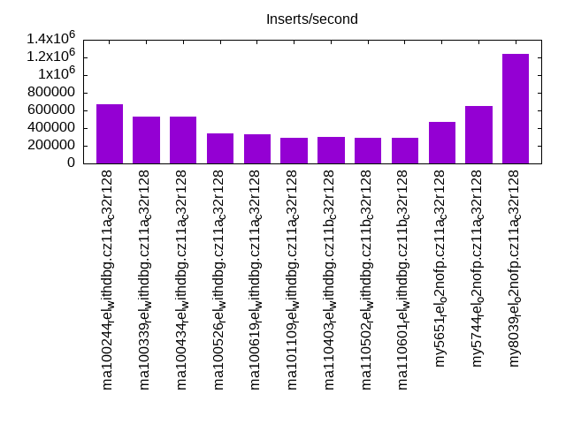
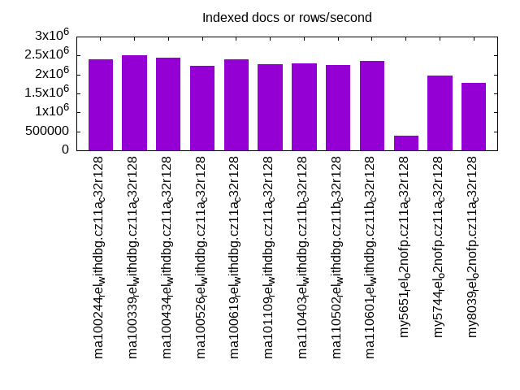
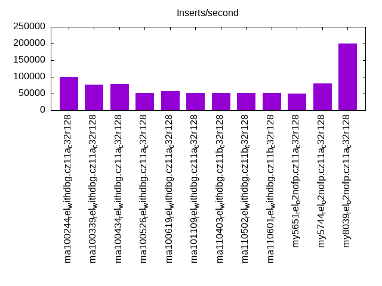
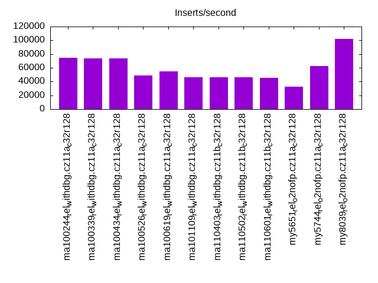
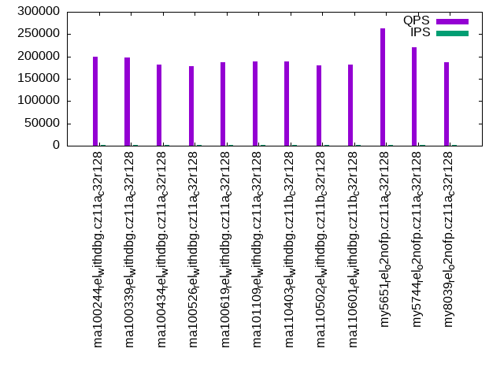
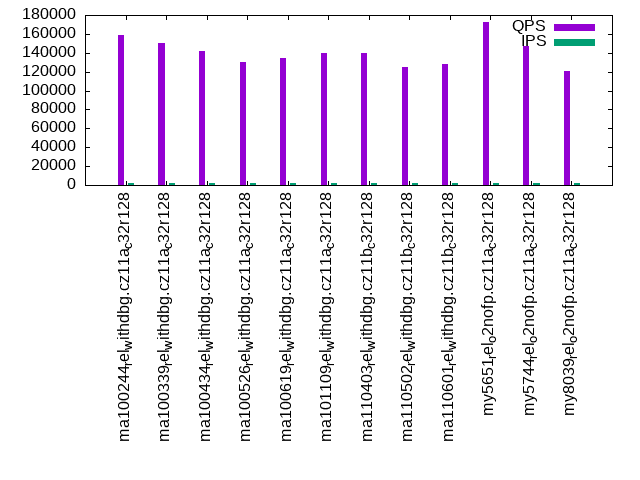
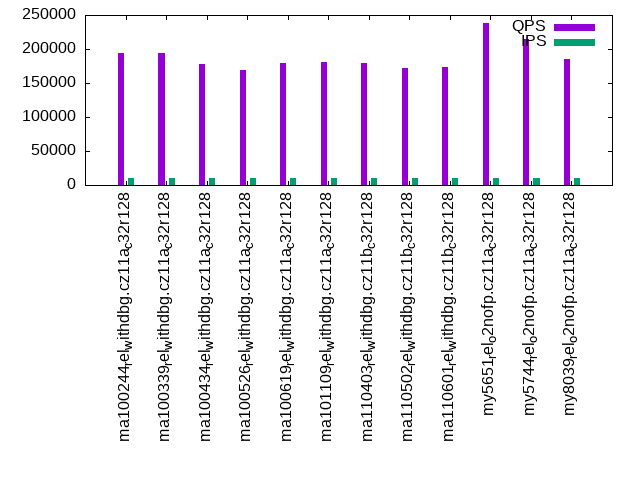
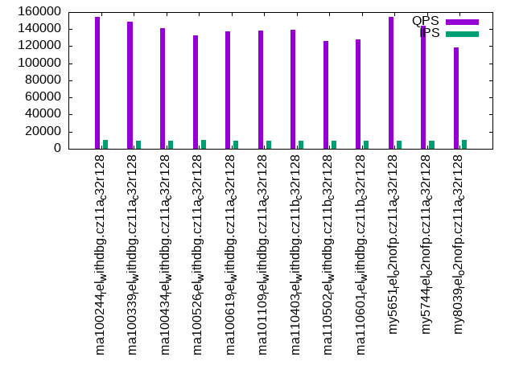
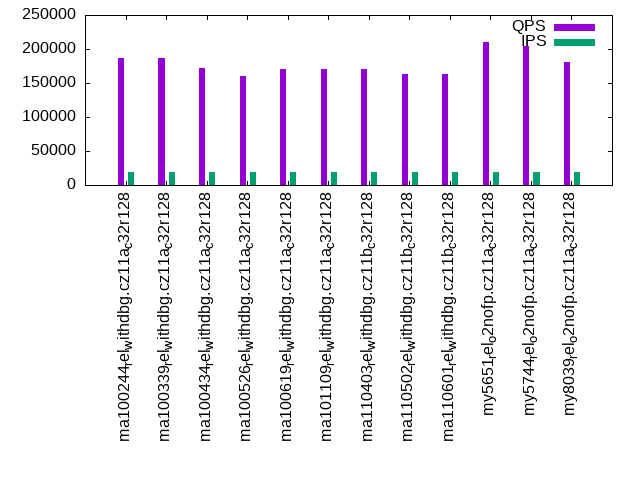
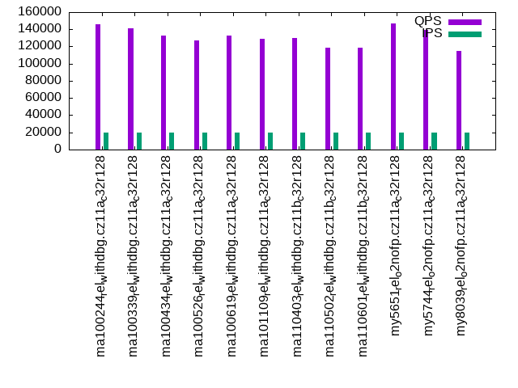

This is a report for the insert benchmark with 200M docs and 20 client(s). It is generated by scripts (bash, awk, sed) and Tufte might not be impressed. An overview of the insert benchmark is here and a short update is here. Below, by DBMS, I mean DBMS+version.config. An example is my8020.c10b40 where my means MySQL, 8020 is version 8.0.20 and c10b40 is the name for the configuration file.
The test server is an ax162-s from Hetzner (see here) with 48 cores, AMD SMT disabled, 128G RAM and ext4 using 2 NVMe devices with SW RAID 1. The benchmark was run with 20 clients and there were 1 or 3 connections per client (1 for queries or inserts without rate limits, 1+1 for rate limited inserts+deletes). It uses 8 tables with a table per client. It loads 10M rows per table without secondary indexes, creates 3 secondary indexes per table, then inserts 16m+4m rows per table with a delete per insert to avoid growing the table. It then does 6 read+write tests for 1800s each that do queries as fast as possible with 100,100,500,500,1000,1000 inserts/s and the same for deletes/s per client concurrent with the queries. The database is cached in memory. Clients and the DBMS share one server.
The tested DBMS are:
The numbers are inserts/s for l.i0, l.i1 and l.i2, indexed docs (or rows) /s for l.x and queries/s for qr100, qp100 thru qr1000, qp1000" The values are the average rate over the entire test for inserts (IPS) and queries (QPS). The range of values for IPS and QPS is split into 3 parts: bottom 25%, middle 50%, top 25%. Values in the bottom 25% have a red background, values in the top 25% have a green background and values in the middle have no color. A gray background is used for values that can be ignored because the DBMS did not sustain the target insert rate. Red backgrounds are not used when the minimum value is within 80% of the max value.
| dbms | l.i0 | l.x | l.i1 | l.i2 | qr100 | qp100 | qr500 | qp500 | qr1000 | qp1000 |
|---|---|---|---|---|---|---|---|---|---|---|
| ma100244_rel_withdbg.cz11a_c32r128 | 673401 | 2409640 | 99163 | 74349 | 200192 | 158811 | 194754 | 153906 | 186976 | 145631 |
| ma100339_rel_withdbg.cz11a_c32r128 | 533333 | 2500001 | 77463 | 73394 | 198425 | 150175 | 193551 | 148756 | 186678 | 141080 |
| ma100434_rel_withdbg.cz11a_c32r128 | 533333 | 2439026 | 78354 | 73327 | 182206 | 142028 | 178066 | 140893 | 171880 | 132728 |
| ma100526_rel_withdbg.cz11a_c32r128 | 335570 | 2222223 | 52049 | 48485 | 177655 | 130303 | 169638 | 133009 | 160985 | 126737 |
| ma100619_rel_withdbg.cz11a_c32r128 | 331126 | 2409640 | 57214 | 54720 | 187300 | 133960 | 179326 | 137778 | 171081 | 132867 |
| ma101109_rel_withdbg.cz11a_c32r128 | 289436 | 2272728 | 51298 | 45977 | 189664 | 139258 | 180596 | 138082 | 170338 | 128883 |
| ma110403_rel_withdbg.cz11b_c32r128 | 295421 | 2298852 | 52339 | 46163 | 188368 | 140198 | 179877 | 139698 | 170672 | 130006 |
| ma110502_rel_withdbg.cz11b_c32r128 | 294551 | 2247192 | 52305 | 46458 | 180520 | 125415 | 172198 | 126417 | 162907 | 118155 |
| ma110601_rel_withdbg.cz11b_c32r128 | 288600 | 2352942 | 51406 | 45610 | 182629 | 127610 | 173475 | 127577 | 163834 | 118540 |
| my5651_rel_o2nofp.cz11a_c32r128 | 473934 | 384616 | 49406 | 32800 | 263331 | 172679 | 238236 | 154139 | 209674 | 147256 |
| my5744_rel_o2nofp.cz11a_c32r128 | 651466 | 1980199 | 80060 | 62794 | 220528 | 147500 | 214585 | 143714 | 204035 | 138892 |
| my8039_rel_o2nofp.cz11a_c32r128 | 1242236 | 1785715 | 200753 | 102041 | 187460 | 120800 | 184773 | 118655 | 180303 | 115161 |
This table has relative throughput, throughput for the DBMS relative to the DBMS in the first line, using the absolute throughput from the previous table. Values less than 0.95 have a yellow background. Values greater than 1.05 have a blue background.
| dbms | l.i0 | l.x | l.i1 | l.i2 | qr100 | qp100 | qr500 | qp500 | qr1000 | qp1000 |
|---|---|---|---|---|---|---|---|---|---|---|
| ma100244_rel_withdbg.cz11a_c32r128 | 1.00 | 1.00 | 1.00 | 1.00 | 1.00 | 1.00 | 1.00 | 1.00 | 1.00 | 1.00 |
| ma100339_rel_withdbg.cz11a_c32r128 | 0.79 | 1.04 | 0.78 | 0.99 | 0.99 | 0.95 | 0.99 | 0.97 | 1.00 | 0.97 |
| ma100434_rel_withdbg.cz11a_c32r128 | 0.79 | 1.01 | 0.79 | 0.99 | 0.91 | 0.89 | 0.91 | 0.92 | 0.92 | 0.91 |
| ma100526_rel_withdbg.cz11a_c32r128 | 0.50 | 0.92 | 0.52 | 0.65 | 0.89 | 0.82 | 0.87 | 0.86 | 0.86 | 0.87 |
| ma100619_rel_withdbg.cz11a_c32r128 | 0.49 | 1.00 | 0.58 | 0.74 | 0.94 | 0.84 | 0.92 | 0.90 | 0.91 | 0.91 |
| ma101109_rel_withdbg.cz11a_c32r128 | 0.43 | 0.94 | 0.52 | 0.62 | 0.95 | 0.88 | 0.93 | 0.90 | 0.91 | 0.88 |
| ma110403_rel_withdbg.cz11b_c32r128 | 0.44 | 0.95 | 0.53 | 0.62 | 0.94 | 0.88 | 0.92 | 0.91 | 0.91 | 0.89 |
| ma110502_rel_withdbg.cz11b_c32r128 | 0.44 | 0.93 | 0.53 | 0.62 | 0.90 | 0.79 | 0.88 | 0.82 | 0.87 | 0.81 |
| ma110601_rel_withdbg.cz11b_c32r128 | 0.43 | 0.98 | 0.52 | 0.61 | 0.91 | 0.80 | 0.89 | 0.83 | 0.88 | 0.81 |
| my5651_rel_o2nofp.cz11a_c32r128 | 0.70 | 0.16 | 0.50 | 0.44 | 1.32 | 1.09 | 1.22 | 1.00 | 1.12 | 1.01 |
| my5744_rel_o2nofp.cz11a_c32r128 | 0.97 | 0.82 | 0.81 | 0.84 | 1.10 | 0.93 | 1.10 | 0.93 | 1.09 | 0.95 |
| my8039_rel_o2nofp.cz11a_c32r128 | 1.84 | 0.74 | 2.02 | 1.37 | 0.94 | 0.76 | 0.95 | 0.77 | 0.96 | 0.79 |
This lists the average rate of inserts/s for the tests that do inserts concurrent with queries. For such tests the query rate is listed in the table above. The read+write tests are setup so that the insert rate should match the target rate every second. Cells that are not at least 95% of the target have a red background to indicate a failure to satisfy the target.
| dbms | qr100.L1 | qp100.L2 | qr500.L3 | qp500.L4 | qr1000.L5 | qp1000.L6 |
|---|---|---|---|---|---|---|
| ma100244_rel_withdbg.cz11a_c32r128 | 1977 | 1977 | 9885 | 9885 | 19769 | 19769 |
| ma100339_rel_withdbg.cz11a_c32r128 | 1977 | 1977 | 9885 | 9879 | 19780 | 19769 |
| ma100434_rel_withdbg.cz11a_c32r128 | 1977 | 1977 | 9885 | 9879 | 19769 | 19769 |
| ma100526_rel_withdbg.cz11a_c32r128 | 1977 | 1977 | 9879 | 9885 | 19769 | 19769 |
| ma100619_rel_withdbg.cz11a_c32r128 | 1977 | 1977 | 9879 | 9879 | 19769 | 19769 |
| ma101109_rel_withdbg.cz11a_c32r128 | 1977 | 1977 | 9879 | 9879 | 19769 | 19769 |
| ma110403_rel_withdbg.cz11b_c32r128 | 1976 | 1977 | 9879 | 9879 | 19780 | 19769 |
| ma110502_rel_withdbg.cz11b_c32r128 | 1976 | 1977 | 9879 | 9879 | 19769 | 19769 |
| ma110601_rel_withdbg.cz11b_c32r128 | 1976 | 1976 | 9879 | 9879 | 19769 | 19769 |
| my5651_rel_o2nofp.cz11a_c32r128 | 1977 | 1977 | 9885 | 9879 | 19769 | 19769 |
| my5744_rel_o2nofp.cz11a_c32r128 | 1978 | 1977 | 9879 | 9879 | 19769 | 19769 |
| my8039_rel_o2nofp.cz11a_c32r128 | 1977 | 1977 | 9885 | 9885 | 19769 | 19769 |
| target | 2000 | 2000 | 10000 | 10000 | 20000 | 20000 |
l.i0: load without secondary indexes. Graphs for performance per 1-second interval are here.
Average throughput:
Insert response time histogram: each cell has the percentage of responses that take <= the time in the header and max is the max response time in seconds. For the max column values in the top 25% of the range have a red background and in the bottom 25% of the range have a green background. The red background is not used when the min value is within 80% of the max value.
| dbms | 256us | 1ms | 4ms | 16ms | 64ms | 256ms | 1s | 4s | 16s | gt | max |
|---|---|---|---|---|---|---|---|---|---|---|---|
| ma100244_rel_withdbg.cz11a_c32r128 | 2.785 | 97.062 | 0.063 | 0.010 | 0.079 | 0.162 | |||||
| ma100339_rel_withdbg.cz11a_c32r128 | 1.487 | 97.871 | 0.453 | 0.017 | 0.093 | 0.079 | 0.521 | ||||
| ma100434_rel_withdbg.cz11a_c32r128 | 1.410 | 98.017 | 0.387 | 0.011 | 0.093 | 0.081 | 0.534 | ||||
| ma100526_rel_withdbg.cz11a_c32r128 | 1.185 | 4.317 | 94.239 | 0.148 | 0.086 | 0.026 | 0.530 | ||||
| ma100619_rel_withdbg.cz11a_c32r128 | 1.269 | 3.076 | 95.535 | 0.015 | 0.090 | 0.016 | 0.639 | ||||
| ma101109_rel_withdbg.cz11a_c32r128 | 1.303 | 1.770 | 96.806 | 0.013 | 0.087 | 0.022 | 0.528 | ||||
| ma110403_rel_withdbg.cz11b_c32r128 | 1.238 | 1.952 | 96.690 | 0.012 | 0.087 | 0.020 | 0.628 | ||||
| ma110502_rel_withdbg.cz11b_c32r128 | 1.157 | 1.913 | 96.809 | 0.013 | 0.087 | 0.022 | 0.647 | ||||
| ma110601_rel_withdbg.cz11b_c32r128 | 1.107 | 1.879 | 96.893 | 0.010 | 0.088 | 0.024 | 0.622 | ||||
| my5651_rel_o2nofp.cz11a_c32r128 | 2.810 | 57.020 | 39.771 | 0.364 | 0.034 | 0.167 | |||||
| my5744_rel_o2nofp.cz11a_c32r128 | 2.330 | 97.454 | 0.169 | 0.013 | 0.034 | 0.145 | |||||
| my8039_rel_o2nofp.cz11a_c32r128 | 1.713 | 98.210 | 0.027 | 0.013 | 0.037 | 0.204 |
Performance metrics for the DBMS listed above. Some are normalized by throughput, others are not. Legend for results is here.
ips qps rps rmbps wps wmbps rpq rkbpq wpi wkbpi csps cpups cspq cpupq dbgb1 dbgb2 rss maxop p50 p99 tag 673401 0 1 0.0 2725.4 191.4 0.000 0.000 0.004 0.291 75527 42.5 0.112 30 13.3 114.1 17.5 0.162 36161 30068 ma100244_rel_withdbg.cz11a_c32r128 533333 0 1 0.0 2269.8 162.5 0.000 0.000 0.004 0.312 71158 50.0 0.133 45 13.3 115.2 18.0 0.521 31776 200 ma100339_rel_withdbg.cz11a_c32r128 533333 0 1 0.0 2365.3 164.4 0.000 0.000 0.004 0.316 71282 50.0 0.134 45 13.3 115.2 NA 0.534 32065 200 ma100434_rel_withdbg.cz11a_c32r128 335570 0 1 0.0 4716.9 149.3 0.000 0.000 0.014 0.456 894475 49.9 2.666 71 13.3 115.2 17.4 0.530 17787 7092 ma100526_rel_withdbg.cz11a_c32r128 331126 0 1 0.0 1717.8 86.2 0.000 0.000 0.005 0.267 886827 50.7 2.678 73 13.3 115.2 16.4 0.639 17088 9290 ma100619_rel_withdbg.cz11a_c32r128 289436 0 1 0.0 1477.8 77.0 0.000 0.000 0.005 0.272 234236 51.2 0.809 85 13.3 115.2 16.5 0.528 14784 4595 ma101109_rel_withdbg.cz11a_c32r128 295421 0 0 0.0 1500.6 78.0 0.000 0.000 0.005 0.270 239517 51.3 0.811 83 13.3 115.2 16.2 0.628 14988 5194 ma110403_rel_withdbg.cz11b_c32r128 294551 0 1 0.0 1511.4 78.2 0.000 0.000 0.005 0.272 237234 51.0 0.805 83 13.3 115.2 16.2 0.647 14984 3697 ma110502_rel_withdbg.cz11b_c32r128 288600 0 0 0.0 1452.0 76.1 0.000 0.000 0.005 0.270 248159 51.1 0.860 85 13.3 115.3 16.5 0.622 14684 5894 ma110601_rel_withdbg.cz11b_c32r128 473934 0 0 0.0 1742.4 131.4 0.000 0.000 0.004 0.284 70665 40.0 0.149 41 13.3 113.8 20.0 0.167 23774 20185 my5651_rel_o2nofp.cz11a_c32r128 651466 0 1 0.0 2692.5 186.8 0.000 0.000 0.004 0.294 73933 42.8 0.113 32 13.3 113.8 21.1 0.145 34463 29668 my5744_rel_o2nofp.cz11a_c32r128 1242236 0 1 0.0 4741.8 361.3 0.000 0.000 0.004 0.298 245337 47.3 0.197 18 13.3 113.9 20.8 0.204 75619 61833 my8039_rel_o2nofp.cz11a_c32r128
l.x: create secondary indexes.
Average throughput:
Performance metrics for the DBMS listed above. Some are normalized by throughput, others are not. Legend for results is here.
ips qps rps rmbps wps wmbps rpq rkbpq wpi wkbpi csps cpups cspq cpupq dbgb1 dbgb2 rss maxop p50 p99 tag 2409640 0 1 0.0 16795.5 1647.2 0.000 0.000 0.007 0.700 65953 23.0 0.027 5 30.4 131.2 25.9 0.001 NA NA ma100244_rel_withdbg.cz11a_c32r128 2500001 0 2 0.0 18153.4 1765.0 0.000 0.000 0.007 0.723 87443 28.8 0.035 6 30.4 132.3 27.5 0.004 NA NA ma100339_rel_withdbg.cz11a_c32r128 2439026 0 2 0.0 17758.3 1749.9 0.000 0.000 0.007 0.735 75105 28.4 0.031 6 30.0 131.9 NA 0.005 NA NA ma100434_rel_withdbg.cz11a_c32r128 2222223 0 2 0.0 13646.7 1508.6 0.000 0.000 0.006 0.695 124877 27.0 0.056 6 30.0 131.9 31.8 0.003 NA NA ma100526_rel_withdbg.cz11a_c32r128 2409640 0 2 0.0 17634.0 1707.4 0.000 0.000 0.007 0.726 153353 29.5 0.064 6 28.1 130.1 24.4 0.004 NA NA ma100619_rel_withdbg.cz11a_c32r128 2272728 0 2 0.0 17275.0 1613.4 0.000 0.000 0.008 0.727 89598 29.5 0.039 6 28.1 130.0 23.7 0.005 NA NA ma101109_rel_withdbg.cz11a_c32r128 2298852 0 2 0.0 17289.0 1615.3 0.000 0.000 0.008 0.720 94452 29.9 0.041 6 28.1 130.1 23.9 0.005 NA NA ma110403_rel_withdbg.cz11b_c32r128 2247192 0 2 0.0 16270.5 1527.2 0.000 0.000 0.007 0.696 82596 28.3 0.037 6 28.1 130.1 23.4 0.006 NA NA ma110502_rel_withdbg.cz11b_c32r128 2352942 0 1 0.0 17472.6 1620.4 0.000 0.000 0.007 0.705 93322 29.7 0.040 6 28.1 130.1 24.2 0.008 NA NA ma110601_rel_withdbg.cz11b_c32r128 384616 0 0 0.0 19692.4 662.5 0.000 0.000 0.051 1.764 77637 39.3 0.202 49 27.9 128.4 34.6 0.001 NA NA my5651_rel_o2nofp.cz11a_c32r128 1980199 0 2 0.0 32101.8 1648.6 0.000 0.000 0.016 0.852 189205 33.2 0.096 8 30.4 130.9 36.6 0.001 NA NA my5744_rel_o2nofp.cz11a_c32r128 1785715 0 13495 580.7 50836.1 1925.4 0.008 0.333 0.028 1.104 167394 59.2 0.094 16 30.3 130.9 30.2 0.005 NA NA my8039_rel_o2nofp.cz11a_c32r128
l.i1: continue load after secondary indexes created with 50 inserts per transaction. Graphs for performance per 1-second interval are here.
Average throughput:
Insert response time histogram: each cell has the percentage of responses that take <= the time in the header and max is the max response time in seconds. For the max column values in the top 25% of the range have a red background and in the bottom 25% of the range have a green background. The red background is not used when the min value is within 80% of the max value.
| dbms | 256us | 1ms | 4ms | 16ms | 64ms | 256ms | 1s | 4s | 16s | gt | max |
|---|---|---|---|---|---|---|---|---|---|---|---|
| ma100244_rel_withdbg.cz11a_c32r128 | 0.001 | 0.189 | 98.495 | 0.153 | 0.339 | 0.822 | 0.386 | ||||
| ma100339_rel_withdbg.cz11a_c32r128 | nonzero | 1.001 | 96.896 | 0.335 | 0.385 | 1.382 | 0.393 | ||||
| ma100434_rel_withdbg.cz11a_c32r128 | 0.933 | 97.002 | 0.288 | 0.377 | 1.400 | 0.374 | |||||
| ma100526_rel_withdbg.cz11a_c32r128 | nonzero | 0.038 | 71.131 | 26.833 | 0.217 | 1.780 | 0.823 | ||||
| ma100619_rel_withdbg.cz11a_c32r128 | nonzero | 0.047 | 91.181 | 6.945 | 0.389 | 1.438 | 0.399 | ||||
| ma101109_rel_withdbg.cz11a_c32r128 | 0.023 | 68.409 | 29.806 | 0.350 | 1.411 | 0.390 | |||||
| ma110403_rel_withdbg.cz11b_c32r128 | 0.030 | 73.226 | 25.026 | 0.355 | 1.362 | 0.373 | |||||
| ma110502_rel_withdbg.cz11b_c32r128 | 0.026 | 72.105 | 26.180 | 0.346 | 1.344 | 0.365 | |||||
| ma110601_rel_withdbg.cz11b_c32r128 | 0.025 | 66.710 | 31.554 | 0.344 | 1.367 | 0.373 | |||||
| my5651_rel_o2nofp.cz11a_c32r128 | 0.001 | 0.280 | 22.491 | 76.422 | 0.117 | 0.689 | 0.326 | ||||
| my5744_rel_o2nofp.cz11a_c32r128 | 0.135 | 98.136 | 0.727 | 0.314 | 0.687 | 0.351 | |||||
| my8039_rel_o2nofp.cz11a_c32r128 | 64.798 | 34.839 | 0.304 | 0.058 | nonzero | 0.332 |
Delete response time histogram: each cell has the percentage of responses that take <= the time in the header and max is the max response time in seconds. For the max column values in the top 25% of the range have a red background and in the bottom 25% of the range have a green background. The red background is not used when the min value is within 80% of the max value.
| dbms | 256us | 1ms | 4ms | 16ms | 64ms | 256ms | 1s | 4s | 16s | gt | max |
|---|---|---|---|---|---|---|---|---|---|---|---|
| ma100244_rel_withdbg.cz11a_c32r128 | 0.002 | 0.292 | 98.422 | 0.122 | 0.377 | 0.784 | 0.392 | ||||
| ma100339_rel_withdbg.cz11a_c32r128 | 0.002 | 1.650 | 96.249 | 0.334 | 0.535 | 1.230 | 0.372 | ||||
| ma100434_rel_withdbg.cz11a_c32r128 | 0.003 | 1.577 | 96.353 | 0.292 | 0.527 | 1.248 | 0.374 | ||||
| ma100526_rel_withdbg.cz11a_c32r128 | 0.002 | 0.066 | 75.338 | 22.597 | 0.259 | 1.738 | 0.808 | ||||
| ma100619_rel_withdbg.cz11a_c32r128 | 0.002 | 0.066 | 92.886 | 5.224 | 0.388 | 1.435 | 0.407 | ||||
| ma101109_rel_withdbg.cz11a_c32r128 | 0.084 | 75.469 | 22.689 | 0.353 | 1.406 | 0.388 | |||||
| ma110403_rel_withdbg.cz11b_c32r128 | nonzero | 0.073 | 75.114 | 23.096 | 0.357 | 1.360 | 0.373 | ||||
| ma110502_rel_withdbg.cz11b_c32r128 | nonzero | 0.066 | 74.877 | 23.368 | 0.348 | 1.342 | 0.362 | ||||
| ma110601_rel_withdbg.cz11b_c32r128 | 0.069 | 69.393 | 28.827 | 0.345 | 1.366 | 0.368 | |||||
| my5651_rel_o2nofp.cz11a_c32r128 | 0.004 | 0.488 | 33.920 | 64.790 | 0.109 | 0.689 | 0.321 | ||||
| my5744_rel_o2nofp.cz11a_c32r128 | 0.002 | 0.331 | 97.744 | 0.926 | 0.402 | 0.595 | 0.357 | ||||
| my8039_rel_o2nofp.cz11a_c32r128 | nonzero | 67.924 | 31.670 | 0.327 | 0.079 | 0.225 |
Performance metrics for the DBMS listed above. Some are normalized by throughput, others are not. Legend for results is here.
ips qps rps rmbps wps wmbps rpq rkbpq wpi wkbpi csps cpups cspq cpupq dbgb1 dbgb2 rss maxop p50 p99 tag 99163 0 0 0.0 5032.6 198.8 0.000 0.000 0.051 2.053 58336 69.2 0.588 335 48.1 150.8 52.5 0.386 6645 150 ma100244_rel_withdbg.cz11a_c32r128 77463 0 1 0.0 4390.2 182.7 0.000 0.001 0.057 2.415 143137 60.6 1.848 376 45.9 148.0 50.5 0.393 5494 150 ma100339_rel_withdbg.cz11a_c32r128 78354 0 0 0.0 4474.6 185.2 0.000 0.000 0.057 2.421 135790 60.5 1.733 371 45.9 148.1 NA 0.374 5594 150 ma100434_rel_withdbg.cz11a_c32r128 52049 0 0 0.0 9228.2 278.7 0.000 0.000 0.177 5.483 861164 56.1 16.545 517 45.0 147.2 46.1 0.823 3295 150 ma100526_rel_withdbg.cz11a_c32r128 57214 0 0 0.0 8166.8 262.8 0.000 0.000 0.143 4.703 815746 64.6 14.258 542 40.7 143.3 43.2 0.399 3547 150 ma100619_rel_withdbg.cz11a_c32r128 51298 0 2136 8.4 7692.0 246.3 0.042 0.168 0.150 4.917 261305 63.0 5.094 589 40.9 143.6 43.2 0.390 3097 150 ma101109_rel_withdbg.cz11a_c32r128 52339 0 2186 8.5 7855.6 248.7 0.042 0.167 0.150 4.867 266290 63.4 5.088 581 40.8 143.4 43.1 0.373 3147 150 ma110403_rel_withdbg.cz11b_c32r128 52305 0 2164 8.5 7864.7 248.5 0.041 0.165 0.150 4.864 260803 63.2 4.986 580 41.1 143.8 43.2 0.365 3147 150 ma110502_rel_withdbg.cz11b_c32r128 51406 0 2159 8.4 7860.5 247.5 0.042 0.168 0.153 4.929 269576 63.3 5.244 591 40.9 143.6 43.2 0.373 3097 150 ma110601_rel_withdbg.cz11b_c32r128 49406 0 1040 4.1 3471.5 126.1 0.021 0.084 0.070 2.614 263836 66.1 5.340 642 46.4 148.4 52.7 0.326 2597 150 my5651_rel_o2nofp.cz11a_c32r128 80060 0 0 0.0 5280.2 195.4 0.000 0.000 0.066 2.499 87451 73.3 1.092 439 47.5 149.6 55.4 0.351 4895 150 my5744_rel_o2nofp.cz11a_c32r128 200753 0 606 9.5 11917.4 500.9 0.003 0.048 0.059 2.555 370103 49.7 1.844 119 48.9 151.5 65.3 0.332 11488 3296 my8039_rel_o2nofp.cz11a_c32r128
l.i2: continue load after secondary indexes created with 5 inserts per transaction. Graphs for performance per 1-second interval are here.
Average throughput:
Insert response time histogram: each cell has the percentage of responses that take <= the time in the header and max is the max response time in seconds. For the max column values in the top 25% of the range have a red background and in the bottom 25% of the range have a green background. The red background is not used when the min value is within 80% of the max value.
| dbms | 256us | 1ms | 4ms | 16ms | 64ms | 256ms | 1s | 4s | 16s | gt | max |
|---|---|---|---|---|---|---|---|---|---|---|---|
| ma100244_rel_withdbg.cz11a_c32r128 | 0.048 | 51.858 | 46.800 | 0.541 | 0.744 | 0.009 | 0.143 | ||||
| ma100339_rel_withdbg.cz11a_c32r128 | 0.093 | 63.215 | 34.993 | 0.549 | 1.140 | 0.010 | 0.157 | ||||
| ma100434_rel_withdbg.cz11a_c32r128 | 0.082 | 63.036 | 35.160 | 0.588 | 1.125 | 0.009 | 0.178 | ||||
| ma100526_rel_withdbg.cz11a_c32r128 | 0.013 | 2.941 | 95.313 | 0.181 | 1.542 | 0.010 | 0.171 | ||||
| ma100619_rel_withdbg.cz11a_c32r128 | 0.115 | 2.970 | 95.899 | 0.176 | 0.823 | 0.017 | 0.163 | ||||
| ma101109_rel_withdbg.cz11a_c32r128 | 0.071 | 1.052 | 97.963 | 0.312 | 0.584 | 0.017 | 0.155 | ||||
| ma110403_rel_withdbg.cz11b_c32r128 | 0.067 | 1.207 | 97.808 | 0.318 | 0.583 | 0.016 | 0.155 | ||||
| ma110502_rel_withdbg.cz11b_c32r128 | 0.056 | 1.234 | 97.830 | 0.326 | 0.537 | 0.017 | 0.149 | ||||
| ma110601_rel_withdbg.cz11b_c32r128 | 0.036 | 1.076 | 97.950 | 0.345 | 0.576 | 0.017 | 0.148 | ||||
| my5651_rel_o2nofp.cz11a_c32r128 | 0.012 | 2.046 | 86.248 | 10.737 | 0.955 | 0.001 | 0.162 | ||||
| my5744_rel_o2nofp.cz11a_c32r128 | 0.060 | 42.539 | 55.302 | 1.635 | 0.457 | 0.006 | 0.181 | ||||
| my8039_rel_o2nofp.cz11a_c32r128 | 0.063 | 78.012 | 19.964 | 1.949 | 0.004 | 0.008 | 0.185 |
Delete response time histogram: each cell has the percentage of responses that take <= the time in the header and max is the max response time in seconds. For the max column values in the top 25% of the range have a red background and in the bottom 25% of the range have a green background. The red background is not used when the min value is within 80% of the max value.
| dbms | 256us | 1ms | 4ms | 16ms | 64ms | 256ms | 1s | 4s | 16s | gt | max |
|---|---|---|---|---|---|---|---|---|---|---|---|
| ma100244_rel_withdbg.cz11a_c32r128 | 0.063 | 44.249 | 54.413 | 0.521 | 0.745 | 0.009 | 0.143 | ||||
| ma100339_rel_withdbg.cz11a_c32r128 | 0.145 | 58.366 | 39.791 | 0.548 | 1.141 | 0.010 | 0.157 | ||||
| ma100434_rel_withdbg.cz11a_c32r128 | 0.136 | 57.228 | 40.911 | 0.588 | 1.126 | 0.010 | 0.178 | ||||
| ma100526_rel_withdbg.cz11a_c32r128 | 0.019 | 2.206 | 96.043 | 0.179 | 1.543 | 0.010 | 0.172 | ||||
| ma100619_rel_withdbg.cz11a_c32r128 | 0.138 | 3.215 | 95.636 | 0.171 | 0.824 | 0.016 | 0.163 | ||||
| ma101109_rel_withdbg.cz11a_c32r128 | 0.099 | 1.093 | 97.900 | 0.306 | 0.586 | 0.017 | 0.160 | ||||
| ma110403_rel_withdbg.cz11b_c32r128 | 0.066 | 1.135 | 97.875 | 0.323 | 0.584 | 0.016 | 0.155 | ||||
| ma110502_rel_withdbg.cz11b_c32r128 | 0.055 | 1.164 | 97.896 | 0.330 | 0.538 | 0.017 | 0.148 | ||||
| ma110601_rel_withdbg.cz11b_c32r128 | 0.037 | 1.017 | 98.004 | 0.348 | 0.577 | 0.017 | 0.145 | ||||
| my5651_rel_o2nofp.cz11a_c32r128 | 0.013 | 2.383 | 86.191 | 10.458 | 0.953 | 0.001 | 0.163 | ||||
| my5744_rel_o2nofp.cz11a_c32r128 | 0.056 | 25.846 | 71.400 | 2.233 | 0.457 | 0.007 | 0.181 | ||||
| my8039_rel_o2nofp.cz11a_c32r128 | 0.067 | 78.244 | 19.746 | 1.931 | 0.004 | 0.008 | 0.194 |
Performance metrics for the DBMS listed above. Some are normalized by throughput, others are not. Legend for results is here.
ips qps rps rmbps wps wmbps rpq rkbpq wpi wkbpi csps cpups cspq cpupq dbgb1 dbgb2 rss maxop p50 p99 tag 74349 0 1 0.0 6412.4 255.5 0.000 0.000 0.086 3.519 318038 54.6 4.278 352 48.1 150.8 53.2 0.143 4102 175 ma100244_rel_withdbg.cz11a_c32r128 73394 0 1 0.0 5749.5 237.9 0.000 0.000 0.078 3.319 327134 50.4 4.457 330 45.9 148.0 50.9 0.157 3727 180 ma100339_rel_withdbg.cz11a_c32r128 73327 0 0 0.0 5726.8 234.7 0.000 0.000 0.078 3.278 348971 50.8 4.759 333 45.9 148.1 NA 0.178 3721 175 ma100434_rel_withdbg.cz11a_c32r128 48485 0 1 0.1 10393.5 324.3 0.000 0.001 0.214 6.849 1059645 51.6 21.855 511 45.0 147.2 46.1 0.171 2567 180 ma100526_rel_withdbg.cz11a_c32r128 54720 0 0 0.0 6839.1 231.4 0.000 0.000 0.125 4.330 1084262 57.7 19.815 506 40.7 143.3 43.3 0.163 3092 170 ma100619_rel_withdbg.cz11a_c32r128 45977 0 5113 20.0 5882.3 199.0 0.111 0.445 0.128 4.433 563851 55.0 12.264 574 40.9 143.6 43.2 0.155 2462 170 ma101109_rel_withdbg.cz11a_c32r128 46163 0 5135 20.1 5906.0 199.8 0.111 0.445 0.128 4.432 596805 55.1 12.928 573 40.8 143.4 43.1 0.155 2472 175 ma110403_rel_withdbg.cz11b_c32r128 46458 0 5132 20.0 5906.9 200.3 0.110 0.442 0.127 4.415 575964 55.6 12.398 574 41.1 143.8 43.1 0.149 2477 175 ma110502_rel_withdbg.cz11b_c32r128 45610 0 5089 19.9 5863.7 197.8 0.112 0.446 0.129 4.442 577531 55.4 12.662 583 40.9 143.6 43.1 0.148 2442 175 ma110601_rel_withdbg.cz11b_c32r128 32800 0 4142 16.2 3568.9 130.3 0.126 0.505 0.109 4.069 426058 52.6 12.989 770 46.4 148.4 53.2 0.162 1748 165 my5651_rel_o2nofp.cz11a_c32r128 62794 0 0 0.0 6003.7 229.4 0.000 0.000 0.096 3.741 305944 54.7 4.872 418 47.5 149.6 55.7 0.181 3416 180 my5744_rel_o2nofp.cz11a_c32r128 102041 0 0 0.0 9810.9 405.7 0.000 0.000 0.096 4.072 627095 52.0 6.146 245 48.9 150.1 65.4 0.185 5739 824 my8039_rel_o2nofp.cz11a_c32r128
qr100.L1: range queries with 100 insert/s per client. Graphs for performance per 1-second interval are here.
Average throughput:
Query response time histogram: each cell has the percentage of responses that take <= the time in the header and max is the max response time in seconds. For max values in the top 25% of the range have a red background and in the bottom 25% of the range have a green background. The red background is not used when the min value is within 80% of the max value.
| dbms | 256us | 1ms | 4ms | 16ms | 64ms | 256ms | 1s | 4s | 16s | gt | max |
|---|---|---|---|---|---|---|---|---|---|---|---|
| ma100244_rel_withdbg.cz11a_c32r128 | 99.980 | 0.016 | 0.004 | nonzero | 0.012 | ||||||
| ma100339_rel_withdbg.cz11a_c32r128 | 99.980 | 0.017 | 0.003 | nonzero | nonzero | 0.025 | |||||
| ma100434_rel_withdbg.cz11a_c32r128 | 99.972 | 0.024 | 0.004 | nonzero | nonzero | 0.019 | |||||
| ma100526_rel_withdbg.cz11a_c32r128 | 99.946 | 0.053 | nonzero | nonzero | 0.008 | ||||||
| ma100619_rel_withdbg.cz11a_c32r128 | 99.961 | 0.038 | nonzero | nonzero | 0.009 | ||||||
| ma101109_rel_withdbg.cz11a_c32r128 | 99.964 | 0.034 | 0.002 | nonzero | 0.009 | ||||||
| ma110403_rel_withdbg.cz11b_c32r128 | 99.963 | 0.036 | 0.002 | nonzero | nonzero | 0.017 | |||||
| ma110502_rel_withdbg.cz11b_c32r128 | 99.956 | 0.042 | 0.002 | nonzero | 0.012 | ||||||
| ma110601_rel_withdbg.cz11b_c32r128 | 99.958 | 0.041 | 0.002 | nonzero | 0.013 | ||||||
| my5651_rel_o2nofp.cz11a_c32r128 | 99.956 | 0.038 | 0.006 | nonzero | 0.011 | ||||||
| my5744_rel_o2nofp.cz11a_c32r128 | 99.992 | 0.006 | 0.002 | nonzero | nonzero | 0.020 | |||||
| my8039_rel_o2nofp.cz11a_c32r128 | 99.984 | 0.014 | 0.002 | nonzero | 0.013 |
Insert response time histogram: each cell has the percentage of responses that take <= the time in the header and max is the max response time in seconds. For max values in the top 25% of the range have a red background and in the bottom 25% of the range have a green background. The red background is not used when the min value is within 80% of the max value.
| dbms | 256us | 1ms | 4ms | 16ms | 64ms | 256ms | 1s | 4s | 16s | gt | max |
|---|---|---|---|---|---|---|---|---|---|---|---|
| ma100244_rel_withdbg.cz11a_c32r128 | 93.896 | 6.090 | 0.014 | 0.023 | |||||||
| ma100339_rel_withdbg.cz11a_c32r128 | 97.918 | 2.081 | 0.001 | 0.016 | |||||||
| ma100434_rel_withdbg.cz11a_c32r128 | 97.429 | 2.567 | 0.004 | 0.020 | |||||||
| ma100526_rel_withdbg.cz11a_c32r128 | 13.432 | 83.872 | 2.696 | 0.032 | |||||||
| ma100619_rel_withdbg.cz11a_c32r128 | 19.101 | 79.481 | 1.418 | 0.032 | |||||||
| ma101109_rel_withdbg.cz11a_c32r128 | 11.285 | 88.607 | 0.108 | 0.025 | |||||||
| ma110403_rel_withdbg.cz11b_c32r128 | 20.899 | 78.871 | 0.231 | 0.026 | |||||||
| ma110502_rel_withdbg.cz11b_c32r128 | 15.071 | 84.829 | 0.100 | 0.020 | |||||||
| ma110601_rel_withdbg.cz11b_c32r128 | 0.004 | 11.804 | 88.139 | 0.053 | 0.019 | ||||||
| my5651_rel_o2nofp.cz11a_c32r128 | 34.204 | 64.396 | 1.400 | 0.031 | |||||||
| my5744_rel_o2nofp.cz11a_c32r128 | 99.860 | 0.140 | 0.008 | ||||||||
| my8039_rel_o2nofp.cz11a_c32r128 | 98.057 | 1.943 | 0.013 |
Delete response time histogram: each cell has the percentage of responses that take <= the time in the header and max is the max response time in seconds. For max values in the top 25% of the range have a red background and in the bottom 25% of the range have a green background. The red background is not used when the min value is within 80% of the max value.
| dbms | 256us | 1ms | 4ms | 16ms | 64ms | 256ms | 1s | 4s | 16s | gt | max |
|---|---|---|---|---|---|---|---|---|---|---|---|
| ma100244_rel_withdbg.cz11a_c32r128 | 0.003 | 96.335 | 3.649 | 0.014 | 0.023 | ||||||
| ma100339_rel_withdbg.cz11a_c32r128 | 0.058 | 98.496 | 1.443 | 0.003 | 0.035 | ||||||
| ma100434_rel_withdbg.cz11a_c32r128 | 0.056 | 98.243 | 1.690 | 0.011 | 0.025 | ||||||
| ma100526_rel_withdbg.cz11a_c32r128 | 0.004 | 17.556 | 80.356 | 2.085 | 0.031 | ||||||
| ma100619_rel_withdbg.cz11a_c32r128 | 0.011 | 21.132 | 77.763 | 1.094 | 0.029 | ||||||
| ma101109_rel_withdbg.cz11a_c32r128 | 0.013 | 14.203 | 85.719 | 0.065 | 0.024 | ||||||
| ma110403_rel_withdbg.cz11b_c32r128 | 0.007 | 22.656 | 77.207 | 0.131 | 0.025 | ||||||
| ma110502_rel_withdbg.cz11b_c32r128 | 0.007 | 17.090 | 82.864 | 0.039 | 0.020 | ||||||
| ma110601_rel_withdbg.cz11b_c32r128 | 0.015 | 14.386 | 85.579 | 0.019 | 0.019 | ||||||
| my5651_rel_o2nofp.cz11a_c32r128 | 0.107 | 45.931 | 53.135 | 0.828 | 0.029 | ||||||
| my5744_rel_o2nofp.cz11a_c32r128 | 0.218 | 99.690 | 0.092 | 0.008 | |||||||
| my8039_rel_o2nofp.cz11a_c32r128 | 0.007 | 98.792 | 1.201 | 0.012 |
Performance metrics for the DBMS listed above. Some are normalized by throughput, others are not. Legend for results is here.
ips qps rps rmbps wps wmbps rpq rkbpq wpi wkbpi csps cpups cspq cpupq dbgb1 dbgb2 rss maxop p50 p99 tag 1977 200192 0 0.0 12043.9 335.5 0.000 0.000 6.092 173.786 805195 44.2 4.022 106 48.1 150.8 53.2 0.012 10200 9641 ma100244_rel_withdbg.cz11a_c32r128 1977 198425 0 0.0 11577.5 322.5 0.000 0.000 5.856 167.063 797500 43.8 4.019 106 45.9 148.0 50.9 0.025 10005 9385 ma100339_rel_withdbg.cz11a_c32r128 1977 182206 0 0.0 12660.8 352.6 0.000 0.000 6.404 182.648 739607 44.3 4.059 117 45.9 148.1 NA 0.019 9254 8807 ma100434_rel_withdbg.cz11a_c32r128 1977 177655 0 0.0 21.5 2.2 0.000 0.000 0.011 1.146 700793 43.5 3.945 118 45.0 147.2 46.1 0.008 9046 8583 ma100526_rel_withdbg.cz11a_c32r128 1977 187300 0 0.0 21.0 2.1 0.000 0.000 0.011 1.113 732329 43.5 3.910 111 40.7 143.3 42.9 0.009 9529 8982 ma100619_rel_withdbg.cz11a_c32r128 1977 189664 68 0.3 33.5 2.4 0.000 0.001 0.017 1.240 730253 43.5 3.850 110 40.9 143.6 42.9 0.009 9622 9078 ma101109_rel_withdbg.cz11a_c32r128 1976 188368 71 0.3 21.7 2.2 0.000 0.002 0.011 1.137 725493 43.5 3.851 111 40.8 143.4 42.8 0.017 9462 9030 ma110403_rel_withdbg.cz11b_c32r128 1976 180520 68 0.3 21.7 2.2 0.000 0.002 0.011 1.132 695438 43.5 3.852 116 41.1 143.8 42.9 0.012 9177 8695 ma110502_rel_withdbg.cz11b_c32r128 1976 182629 72 0.3 21.5 2.2 0.000 0.002 0.011 1.134 704000 43.5 3.855 114 40.9 143.6 42.8 0.013 9273 8774 ma110601_rel_withdbg.cz11b_c32r128 1977 263331 54 0.2 887.1 26.1 0.000 0.001 0.449 13.500 1010828 42.6 3.839 78 46.4 148.4 53.2 0.011 13366 12151 my5651_rel_o2nofp.cz11a_c32r128 1978 220528 0 0.0 2177.0 61.5 0.000 0.000 1.101 31.854 848197 43.6 3.846 95 47.5 149.6 55.8 0.020 11128 10533 my5744_rel_o2nofp.cz11a_c32r128 1977 187460 0 0.0 2278.1 64.8 0.000 0.000 1.152 33.573 723084 42.9 3.857 110 48.9 150.1 65.3 0.013 9478 9094 my8039_rel_o2nofp.cz11a_c32r128
qp100.L2: point queries with 100 insert/s per client. Graphs for performance per 1-second interval are here.
Average throughput:
Query response time histogram: each cell has the percentage of responses that take <= the time in the header and max is the max response time in seconds. For max values in the top 25% of the range have a red background and in the bottom 25% of the range have a green background. The red background is not used when the min value is within 80% of the max value.
| dbms | 256us | 1ms | 4ms | 16ms | 64ms | 256ms | 1s | 4s | 16s | gt | max |
|---|---|---|---|---|---|---|---|---|---|---|---|
| ma100244_rel_withdbg.cz11a_c32r128 | 99.865 | 0.119 | 0.015 | 0.001 | 0.011 | ||||||
| ma100339_rel_withdbg.cz11a_c32r128 | 99.812 | 0.174 | 0.014 | nonzero | 0.009 | ||||||
| ma100434_rel_withdbg.cz11a_c32r128 | 99.719 | 0.265 | 0.015 | nonzero | 0.010 | ||||||
| ma100526_rel_withdbg.cz11a_c32r128 | 98.335 | 1.664 | 0.001 | nonzero | 0.012 | ||||||
| ma100619_rel_withdbg.cz11a_c32r128 | 98.675 | 1.323 | 0.001 | nonzero | 0.012 | ||||||
| ma101109_rel_withdbg.cz11a_c32r128 | 99.194 | 0.799 | 0.006 | nonzero | 0.012 | ||||||
| ma110403_rel_withdbg.cz11b_c32r128 | 99.189 | 0.805 | 0.006 | nonzero | 0.014 | ||||||
| ma110502_rel_withdbg.cz11b_c32r128 | 97.989 | 2.006 | 0.005 | nonzero | 0.012 | ||||||
| ma110601_rel_withdbg.cz11b_c32r128 | 98.351 | 1.642 | 0.007 | nonzero | 0.014 | ||||||
| my5651_rel_o2nofp.cz11a_c32r128 | 99.846 | 0.142 | 0.012 | nonzero | 0.009 | ||||||
| my5744_rel_o2nofp.cz11a_c32r128 | 99.475 | 0.519 | 0.005 | nonzero | nonzero | 0.016 | |||||
| my8039_rel_o2nofp.cz11a_c32r128 | 99.201 | 0.790 | 0.009 | nonzero | 0.011 |
Insert response time histogram: each cell has the percentage of responses that take <= the time in the header and max is the max response time in seconds. For max values in the top 25% of the range have a red background and in the bottom 25% of the range have a green background. The red background is not used when the min value is within 80% of the max value.
| dbms | 256us | 1ms | 4ms | 16ms | 64ms | 256ms | 1s | 4s | 16s | gt | max |
|---|---|---|---|---|---|---|---|---|---|---|---|
| ma100244_rel_withdbg.cz11a_c32r128 | 96.744 | 3.256 | 0.014 | ||||||||
| ma100339_rel_withdbg.cz11a_c32r128 | 98.486 | 1.512 | 0.001 | 0.054 | |||||||
| ma100434_rel_withdbg.cz11a_c32r128 | 98.442 | 1.546 | 0.013 | 0.055 | |||||||
| ma100526_rel_withdbg.cz11a_c32r128 | 18.411 | 81.589 | 0.014 | ||||||||
| ma100619_rel_withdbg.cz11a_c32r128 | 9.599 | 90.388 | 0.014 | 0.018 | |||||||
| ma101109_rel_withdbg.cz11a_c32r128 | 8.612 | 90.482 | 0.906 | 0.026 | |||||||
| ma110403_rel_withdbg.cz11b_c32r128 | 9.451 | 90.343 | 0.206 | 0.023 | |||||||
| ma110502_rel_withdbg.cz11b_c32r128 | 11.850 | 88.004 | 0.146 | 0.023 | |||||||
| ma110601_rel_withdbg.cz11b_c32r128 | 6.914 | 92.074 | 1.012 | 0.024 | |||||||
| my5651_rel_o2nofp.cz11a_c32r128 | 22.949 | 76.628 | 0.424 | 0.026 | |||||||
| my5744_rel_o2nofp.cz11a_c32r128 | 99.208 | 0.792 | 0.007 | ||||||||
| my8039_rel_o2nofp.cz11a_c32r128 | 99.081 | 0.919 | 0.010 |
Delete response time histogram: each cell has the percentage of responses that take <= the time in the header and max is the max response time in seconds. For max values in the top 25% of the range have a red background and in the bottom 25% of the range have a green background. The red background is not used when the min value is within 80% of the max value.
| dbms | 256us | 1ms | 4ms | 16ms | 64ms | 256ms | 1s | 4s | 16s | gt | max |
|---|---|---|---|---|---|---|---|---|---|---|---|
| ma100244_rel_withdbg.cz11a_c32r128 | 0.008 | 97.875 | 2.117 | 0.014 | |||||||
| ma100339_rel_withdbg.cz11a_c32r128 | 0.056 | 99.001 | 0.943 | 0.013 | |||||||
| ma100434_rel_withdbg.cz11a_c32r128 | 0.049 | 98.929 | 1.010 | 0.013 | 0.053 | ||||||
| ma100526_rel_withdbg.cz11a_c32r128 | 0.001 | 21.074 | 78.924 | 0.001 | 0.016 | ||||||
| ma100619_rel_withdbg.cz11a_c32r128 | 0.011 | 10.160 | 89.825 | 0.004 | 0.018 | ||||||
| ma101109_rel_withdbg.cz11a_c32r128 | 0.024 | 8.889 | 90.472 | 0.615 | 0.024 | ||||||
| ma110403_rel_withdbg.cz11b_c32r128 | 10.019 | 89.850 | 0.131 | 0.023 | |||||||
| ma110502_rel_withdbg.cz11b_c32r128 | 0.001 | 12.751 | 87.149 | 0.099 | 0.022 | ||||||
| ma110601_rel_withdbg.cz11b_c32r128 | 0.001 | 7.143 | 92.082 | 0.774 | 0.024 | ||||||
| my5651_rel_o2nofp.cz11a_c32r128 | 0.007 | 34.021 | 65.736 | 0.236 | 0.024 | ||||||
| my5744_rel_o2nofp.cz11a_c32r128 | 0.164 | 99.499 | 0.338 | 0.006 | |||||||
| my8039_rel_o2nofp.cz11a_c32r128 | 99.510 | 0.490 | 0.011 |
Performance metrics for the DBMS listed above. Some are normalized by throughput, others are not. Legend for results is here.
ips qps rps rmbps wps wmbps rpq rkbpq wpi wkbpi csps cpups cspq cpupq dbgb1 dbgb2 rss maxop p50 p99 tag 1977 158811 0 0.0 11175.7 311.2 0.000 0.000 5.653 161.211 666457 42.9 4.197 130 48.1 150.8 53.1 0.011 8071 7416 ma100244_rel_withdbg.cz11a_c32r128 1977 150175 0 0.0 10911.9 303.7 0.000 0.000 5.520 157.330 630124 43.1 4.196 138 45.9 148.0 50.6 0.009 7592 7128 ma100339_rel_withdbg.cz11a_c32r128 1977 142028 0 0.0 11718.0 326.4 0.000 0.000 5.927 169.049 600768 43.3 4.230 146 45.9 148.1 NA 0.010 7208 6734 ma100434_rel_withdbg.cz11a_c32r128 1977 130303 0 0.0 20.2 2.1 0.000 0.000 0.010 1.062 512370 41.4 3.932 153 45.0 147.2 46.1 0.012 6601 6137 ma100526_rel_withdbg.cz11a_c32r128 1977 133960 0 0.0 20.7 2.1 0.000 0.000 0.010 1.101 522994 41.5 3.904 149 40.7 143.3 42.9 0.012 6777 6297 ma100619_rel_withdbg.cz11a_c32r128 1977 139258 64 0.3 28.4 2.2 0.000 0.002 0.014 1.138 545407 42.0 3.917 145 40.9 143.6 42.9 0.012 7048 6361 ma101109_rel_withdbg.cz11a_c32r128 1977 140198 60 0.2 21.3 2.2 0.000 0.002 0.011 1.129 547693 42.0 3.907 144 40.8 143.4 42.8 0.014 7127 6281 ma110403_rel_withdbg.cz11b_c32r128 1977 125415 68 0.3 22.1 2.2 0.001 0.002 0.011 1.127 484579 41.3 3.864 158 41.1 143.8 42.9 0.012 6345 5834 ma110502_rel_withdbg.cz11b_c32r128 1976 127610 63 0.2 21.3 2.2 0.000 0.002 0.011 1.126 496789 41.7 3.893 157 40.9 143.6 42.8 0.014 6444 5772 ma110601_rel_withdbg.cz11b_c32r128 1977 172679 51 0.2 31.4 2.3 0.000 0.001 0.016 1.202 679244 40.8 3.934 113 46.4 148.4 53.3 0.009 8775 7927 my5651_rel_o2nofp.cz11a_c32r128 1977 147500 0 0.0 198.6 6.7 0.000 0.000 0.100 3.463 563790 41.1 3.822 134 47.5 149.6 55.8 0.016 7432 6888 my5744_rel_o2nofp.cz11a_c32r128 1977 120800 0 0.0 247.1 8.6 0.000 0.000 0.125 4.445 477454 41.6 3.952 165 48.9 150.1 65.3 0.011 6121 5770 my8039_rel_o2nofp.cz11a_c32r128
qr500.L3: range queries with 500 insert/s per client. Graphs for performance per 1-second interval are here.
Average throughput:
Query response time histogram: each cell has the percentage of responses that take <= the time in the header and max is the max response time in seconds. For max values in the top 25% of the range have a red background and in the bottom 25% of the range have a green background. The red background is not used when the min value is within 80% of the max value.
| dbms | 256us | 1ms | 4ms | 16ms | 64ms | 256ms | 1s | 4s | 16s | gt | max |
|---|---|---|---|---|---|---|---|---|---|---|---|
| ma100244_rel_withdbg.cz11a_c32r128 | 99.954 | 0.032 | 0.011 | 0.002 | nonzero | 0.041 | |||||
| ma100339_rel_withdbg.cz11a_c32r128 | 99.952 | 0.033 | 0.013 | 0.002 | nonzero | 0.029 | |||||
| ma100434_rel_withdbg.cz11a_c32r128 | 99.939 | 0.045 | 0.014 | 0.002 | nonzero | 0.021 | |||||
| ma100526_rel_withdbg.cz11a_c32r128 | 99.777 | 0.219 | 0.004 | nonzero | nonzero | 0.032 | |||||
| ma100619_rel_withdbg.cz11a_c32r128 | 99.836 | 0.159 | 0.005 | 0.001 | nonzero | 0.027 | |||||
| ma101109_rel_withdbg.cz11a_c32r128 | 99.708 | 0.277 | 0.014 | 0.001 | nonzero | 0.036 | |||||
| ma110403_rel_withdbg.cz11b_c32r128 | 99.701 | 0.287 | 0.013 | nonzero | nonzero | 0.028 | |||||
| ma110502_rel_withdbg.cz11b_c32r128 | 99.666 | 0.321 | 0.013 | nonzero | nonzero | 0.023 | |||||
| ma110601_rel_withdbg.cz11b_c32r128 | 99.654 | 0.333 | 0.013 | nonzero | nonzero | 0.034 | |||||
| my5651_rel_o2nofp.cz11a_c32r128 | 99.618 | 0.317 | 0.058 | 0.007 | nonzero | 0.019 | |||||
| my5744_rel_o2nofp.cz11a_c32r128 | 99.977 | 0.013 | 0.008 | 0.001 | nonzero | 0.021 | |||||
| my8039_rel_o2nofp.cz11a_c32r128 | 99.964 | 0.024 | 0.011 | 0.001 | nonzero | 0.027 |
Insert response time histogram: each cell has the percentage of responses that take <= the time in the header and max is the max response time in seconds. For max values in the top 25% of the range have a red background and in the bottom 25% of the range have a green background. The red background is not used when the min value is within 80% of the max value.
| dbms | 256us | 1ms | 4ms | 16ms | 64ms | 256ms | 1s | 4s | 16s | gt | max |
|---|---|---|---|---|---|---|---|---|---|---|---|
| ma100244_rel_withdbg.cz11a_c32r128 | 82.123 | 17.481 | 0.396 | 0.047 | |||||||
| ma100339_rel_withdbg.cz11a_c32r128 | 83.721 | 15.994 | 0.284 | 0.036 | |||||||
| ma100434_rel_withdbg.cz11a_c32r128 | 83.054 | 16.673 | 0.273 | 0.043 | |||||||
| ma100526_rel_withdbg.cz11a_c32r128 | nonzero | 4.614 | 90.358 | 5.028 | 0.055 | ||||||
| ma100619_rel_withdbg.cz11a_c32r128 | 0.004 | 5.420 | 90.632 | 3.944 | 0.047 | ||||||
| ma101109_rel_withdbg.cz11a_c32r128 | 0.001 | 4.716 | 79.238 | 16.046 | 0.055 | ||||||
| ma110403_rel_withdbg.cz11b_c32r128 | 0.002 | 4.001 | 81.097 | 14.899 | 0.055 | ||||||
| ma110502_rel_withdbg.cz11b_c32r128 | 0.001 | 6.054 | 81.614 | 12.331 | 0.062 | ||||||
| ma110601_rel_withdbg.cz11b_c32r128 | 0.002 | 4.454 | 80.088 | 15.456 | 0.059 | ||||||
| my5651_rel_o2nofp.cz11a_c32r128 | nonzero | 6.217 | 69.672 | 24.110 | 0.044 | ||||||
| my5744_rel_o2nofp.cz11a_c32r128 | 0.002 | 75.778 | 23.715 | 0.506 | 0.039 | ||||||
| my8039_rel_o2nofp.cz11a_c32r128 | 78.628 | 21.066 | 0.306 | 0.037 |
Delete response time histogram: each cell has the percentage of responses that take <= the time in the header and max is the max response time in seconds. For max values in the top 25% of the range have a red background and in the bottom 25% of the range have a green background. The red background is not used when the min value is within 80% of the max value.
| dbms | 256us | 1ms | 4ms | 16ms | 64ms | 256ms | 1s | 4s | 16s | gt | max |
|---|---|---|---|---|---|---|---|---|---|---|---|
| ma100244_rel_withdbg.cz11a_c32r128 | 0.003 | 85.127 | 14.537 | 0.332 | 0.050 | ||||||
| ma100339_rel_withdbg.cz11a_c32r128 | 0.030 | 87.058 | 12.693 | 0.219 | 0.034 | ||||||
| ma100434_rel_withdbg.cz11a_c32r128 | 0.031 | 86.552 | 13.192 | 0.225 | 0.045 | ||||||
| ma100526_rel_withdbg.cz11a_c32r128 | 0.007 | 4.993 | 92.425 | 2.575 | 0.053 | ||||||
| ma100619_rel_withdbg.cz11a_c32r128 | 0.068 | 5.082 | 92.527 | 2.323 | 0.045 | ||||||
| ma101109_rel_withdbg.cz11a_c32r128 | 0.020 | 4.376 | 82.901 | 12.704 | 0.057 | ||||||
| ma110403_rel_withdbg.cz11b_c32r128 | 0.015 | 3.835 | 82.891 | 13.259 | 0.057 | ||||||
| ma110502_rel_withdbg.cz11b_c32r128 | 0.013 | 6.220 | 83.032 | 10.735 | 0.043 | ||||||
| ma110601_rel_withdbg.cz11b_c32r128 | 0.013 | 4.549 | 81.486 | 13.952 | 0.046 | ||||||
| my5651_rel_o2nofp.cz11a_c32r128 | 0.009 | 7.778 | 71.082 | 21.131 | 0.052 | ||||||
| my5744_rel_o2nofp.cz11a_c32r128 | 0.107 | 79.759 | 19.689 | 0.445 | 0.041 | ||||||
| my8039_rel_o2nofp.cz11a_c32r128 | 0.014 | 84.300 | 15.463 | 0.224 | 0.038 |
Performance metrics for the DBMS listed above. Some are normalized by throughput, others are not. Legend for results is here.
ips qps rps rmbps wps wmbps rpq rkbpq wpi wkbpi csps cpups cspq cpupq dbgb1 dbgb2 rss maxop p50 p99 tag 9885 194754 0 0.0 10873.6 309.4 0.000 0.000 1.100 32.050 772776 46.9 3.968 116 48.1 150.8 53.0 0.041 9912 9302 ma100244_rel_withdbg.cz11a_c32r128 9885 193551 0 0.0 10870.5 309.5 0.000 0.000 1.100 32.064 770673 46.5 3.982 115 45.9 148.0 50.6 0.029 9876 9270 ma100339_rel_withdbg.cz11a_c32r128 9885 178066 0 0.0 10445.7 297.8 0.000 0.000 1.057 30.846 710824 46.6 3.992 126 45.9 148.1 NA 0.021 9062 8599 ma100434_rel_withdbg.cz11a_c32r128 9879 169638 0 0.0 90.2 10.3 0.000 0.000 0.009 1.066 722133 49.1 4.257 139 45.0 147.2 46.1 0.032 8615 8135 ma100526_rel_withdbg.cz11a_c32r128 9879 179326 0 0.0 1245.6 41.0 0.000 0.000 0.126 4.250 769650 48.3 4.292 129 40.7 143.3 42.9 0.027 9142 8503 ma100619_rel_withdbg.cz11a_c32r128 9879 180596 333 1.3 1274.7 41.6 0.002 0.007 0.129 4.316 721788 48.2 3.997 128 40.9 143.6 42.9 0.036 9161 8647 ma101109_rel_withdbg.cz11a_c32r128 9879 179877 324 1.3 1260.5 41.4 0.002 0.007 0.128 4.287 719270 48.2 3.999 129 40.8 143.4 42.9 0.028 9126 8535 ma110403_rel_withdbg.cz11b_c32r128 9879 172198 328 1.3 1258.8 41.4 0.002 0.008 0.127 4.293 689069 48.0 4.002 134 41.1 143.8 42.9 0.023 8759 8215 ma110502_rel_withdbg.cz11b_c32r128 9879 173475 332 1.3 1258.4 41.4 0.002 0.008 0.127 4.286 695963 48.1 4.012 133 40.9 143.6 42.9 0.034 8793 8231 ma110601_rel_withdbg.cz11b_c32r128 9885 238236 213 0.8 1175.8 40.1 0.001 0.004 0.119 4.156 919806 45.7 3.861 92 46.4 148.4 53.3 0.019 12179 10168 my5651_rel_o2nofp.cz11a_c32r128 9879 214585 0 0.0 1140.5 39.5 0.000 0.000 0.115 4.090 817009 46.2 3.807 103 47.5 149.6 55.9 0.021 10788 10037 my5744_rel_o2nofp.cz11a_c32r128 9885 184773 0 0.0 1348.1 47.6 0.000 0.000 0.136 4.928 712444 44.9 3.856 117 48.9 150.1 65.3 0.027 9318 8918 my8039_rel_o2nofp.cz11a_c32r128
qp500.L4: point queries with 500 insert/s per client. Graphs for performance per 1-second interval are here.
Average throughput:
Query response time histogram: each cell has the percentage of responses that take <= the time in the header and max is the max response time in seconds. For max values in the top 25% of the range have a red background and in the bottom 25% of the range have a green background. The red background is not used when the min value is within 80% of the max value.
| dbms | 256us | 1ms | 4ms | 16ms | 64ms | 256ms | 1s | 4s | 16s | gt | max |
|---|---|---|---|---|---|---|---|---|---|---|---|
| ma100244_rel_withdbg.cz11a_c32r128 | 99.603 | 0.338 | 0.048 | 0.012 | nonzero | 0.035 | |||||
| ma100339_rel_withdbg.cz11a_c32r128 | 99.568 | 0.368 | 0.057 | 0.007 | nonzero | 0.018 | |||||
| ma100434_rel_withdbg.cz11a_c32r128 | 99.442 | 0.492 | 0.059 | 0.007 | nonzero | 0.021 | |||||
| ma100526_rel_withdbg.cz11a_c32r128 | 97.733 | 2.253 | 0.014 | nonzero | nonzero | 0.034 | |||||
| ma100619_rel_withdbg.cz11a_c32r128 | 98.377 | 1.613 | 0.010 | nonzero | nonzero | 0.016 | |||||
| ma101109_rel_withdbg.cz11a_c32r128 | 98.459 | 1.516 | 0.025 | nonzero | nonzero | 0.022 | |||||
| ma110403_rel_withdbg.cz11b_c32r128 | 98.561 | 1.417 | 0.022 | nonzero | nonzero | 0.016 | |||||
| ma110502_rel_withdbg.cz11b_c32r128 | 97.758 | 2.215 | 0.026 | nonzero | nonzero | 0.016 | |||||
| ma110601_rel_withdbg.cz11b_c32r128 | 97.851 | 2.123 | 0.025 | nonzero | 0.015 | ||||||
| my5651_rel_o2nofp.cz11a_c32r128 | 99.118 | 0.802 | 0.072 | 0.008 | nonzero | 0.023 | |||||
| my5744_rel_o2nofp.cz11a_c32r128 | 99.235 | 0.729 | 0.031 | 0.006 | nonzero | 0.026 | |||||
| my8039_rel_o2nofp.cz11a_c32r128 | 98.971 | 0.963 | 0.062 | 0.004 | nonzero | 0.028 |
Insert response time histogram: each cell has the percentage of responses that take <= the time in the header and max is the max response time in seconds. For max values in the top 25% of the range have a red background and in the bottom 25% of the range have a green background. The red background is not used when the min value is within 80% of the max value.
| dbms | 256us | 1ms | 4ms | 16ms | 64ms | 256ms | 1s | 4s | 16s | gt | max |
|---|---|---|---|---|---|---|---|---|---|---|---|
| ma100244_rel_withdbg.cz11a_c32r128 | nonzero | 74.238 | 25.482 | 0.280 | 0.047 | ||||||
| ma100339_rel_withdbg.cz11a_c32r128 | 0.001 | 77.506 | 22.278 | 0.216 | 0.050 | ||||||
| ma100434_rel_withdbg.cz11a_c32r128 | 79.240 | 20.552 | 0.207 | 0.046 | |||||||
| ma100526_rel_withdbg.cz11a_c32r128 | 5.567 | 91.098 | 3.335 | 0.049 | |||||||
| ma100619_rel_withdbg.cz11a_c32r128 | 0.003 | 6.782 | 90.078 | 3.138 | 0.051 | ||||||
| ma101109_rel_withdbg.cz11a_c32r128 | 0.001 | 4.093 | 77.395 | 18.512 | 0.042 | ||||||
| ma110403_rel_withdbg.cz11b_c32r128 | 0.002 | 4.553 | 80.973 | 14.473 | 0.050 | ||||||
| ma110502_rel_withdbg.cz11b_c32r128 | 0.001 | 5.349 | 80.797 | 13.853 | 0.036 | ||||||
| ma110601_rel_withdbg.cz11b_c32r128 | 0.001 | 4.393 | 78.338 | 17.269 | 0.047 | ||||||
| my5651_rel_o2nofp.cz11a_c32r128 | nonzero | 6.243 | 72.541 | 21.215 | 0.001 | 0.070 | |||||
| my5744_rel_o2nofp.cz11a_c32r128 | 0.002 | 71.125 | 28.518 | 0.355 | 0.040 | ||||||
| my8039_rel_o2nofp.cz11a_c32r128 | 82.558 | 17.363 | 0.079 | 0.027 |
Delete response time histogram: each cell has the percentage of responses that take <= the time in the header and max is the max response time in seconds. For max values in the top 25% of the range have a red background and in the bottom 25% of the range have a green background. The red background is not used when the min value is within 80% of the max value.
| dbms | 256us | 1ms | 4ms | 16ms | 64ms | 256ms | 1s | 4s | 16s | gt | max |
|---|---|---|---|---|---|---|---|---|---|---|---|
| ma100244_rel_withdbg.cz11a_c32r128 | 0.004 | 79.072 | 20.674 | 0.249 | 0.046 | ||||||
| ma100339_rel_withdbg.cz11a_c32r128 | 0.031 | 82.265 | 17.554 | 0.151 | 0.047 | ||||||
| ma100434_rel_withdbg.cz11a_c32r128 | 0.017 | 83.891 | 15.930 | 0.162 | 0.044 | ||||||
| ma100526_rel_withdbg.cz11a_c32r128 | 0.004 | 6.176 | 92.380 | 1.441 | 0.047 | ||||||
| ma100619_rel_withdbg.cz11a_c32r128 | 0.050 | 6.819 | 91.033 | 2.098 | 0.031 | ||||||
| ma101109_rel_withdbg.cz11a_c32r128 | 0.016 | 3.416 | 82.204 | 14.363 | 0.034 | ||||||
| ma110403_rel_withdbg.cz11b_c32r128 | 0.009 | 4.373 | 82.851 | 12.767 | 0.037 | ||||||
| ma110502_rel_withdbg.cz11b_c32r128 | 0.005 | 5.586 | 82.201 | 12.208 | 0.037 | ||||||
| ma110601_rel_withdbg.cz11b_c32r128 | 0.012 | 4.474 | 80.333 | 15.181 | 0.041 | ||||||
| my5651_rel_o2nofp.cz11a_c32r128 | 0.007 | 8.176 | 73.894 | 17.922 | nonzero | 0.066 | |||||
| my5744_rel_o2nofp.cz11a_c32r128 | 0.201 | 75.904 | 23.586 | 0.309 | 0.043 | ||||||
| my8039_rel_o2nofp.cz11a_c32r128 | 0.001 | 87.772 | 12.175 | 0.051 | 0.030 |
Performance metrics for the DBMS listed above. Some are normalized by throughput, others are not. Legend for results is here.
ips qps rps rmbps wps wmbps rpq rkbpq wpi wkbpi csps cpups cspq cpupq dbgb1 dbgb2 rss maxop p50 p99 tag 9885 153906 0 0.0 10831.2 308.2 0.000 0.000 1.096 31.927 644634 45.5 4.188 142 48.1 150.8 53.0 0.035 7800 7368 ma100244_rel_withdbg.cz11a_c32r128 9879 148756 0 0.0 9842.4 281.1 0.000 0.000 0.996 29.132 622540 45.4 4.185 146 45.9 148.0 50.6 0.018 7514 7096 ma100339_rel_withdbg.cz11a_c32r128 9879 140893 0 0.0 8935.1 255.9 0.000 0.000 0.904 26.523 588652 45.1 4.178 154 45.9 148.1 NA 0.021 7115 6731 ma100434_rel_withdbg.cz11a_c32r128 9885 133009 0 0.0 92.0 10.3 0.000 0.000 0.009 1.069 613134 46.9 4.610 169 45.0 147.2 46.2 0.034 6770 6089 ma100526_rel_withdbg.cz11a_c32r128 9879 137778 0 0.0 1182.6 39.3 0.000 0.000 0.120 4.077 635648 46.5 4.614 162 40.7 143.3 43.0 0.016 6971 6345 ma100619_rel_withdbg.cz11a_c32r128 9879 138082 341 1.3 1223.7 40.5 0.002 0.010 0.124 4.199 586731 46.5 4.249 162 40.9 143.6 42.9 0.022 7000 6537 ma101109_rel_withdbg.cz11a_c32r128 9879 139698 342 1.3 1212.0 40.3 0.002 0.010 0.123 4.176 592160 46.3 4.239 159 40.8 143.4 42.8 0.016 7082 6571 ma110403_rel_withdbg.cz11b_c32r128 9879 126417 344 1.3 1213.4 40.4 0.003 0.011 0.123 4.183 536688 46.0 4.245 175 41.1 143.8 42.9 0.016 6396 5914 ma110502_rel_withdbg.cz11b_c32r128 9879 127577 345 1.3 1217.0 40.4 0.003 0.011 0.123 4.186 544240 46.3 4.266 174 40.9 143.6 42.8 0.015 6457 5946 ma110601_rel_withdbg.cz11b_c32r128 9879 154139 214 0.8 1304.1 43.7 0.001 0.006 0.132 4.524 600988 43.9 3.899 137 46.4 148.4 53.4 0.023 7787 7160 my5651_rel_o2nofp.cz11a_c32r128 9879 143714 0 0.0 1192.6 40.9 0.000 0.000 0.121 4.242 550702 43.6 3.832 146 47.5 149.6 55.9 0.026 7240 6617 my5744_rel_o2nofp.cz11a_c32r128 9885 118655 0 0.0 1364.1 48.1 0.000 0.000 0.138 4.985 477892 43.4 4.028 176 48.9 150.1 65.3 0.028 6009 5658 my8039_rel_o2nofp.cz11a_c32r128
qr1000.L5: range queries with 1000 insert/s per client. Graphs for performance per 1-second interval are here.
Average throughput:
Query response time histogram: each cell has the percentage of responses that take <= the time in the header and max is the max response time in seconds. For max values in the top 25% of the range have a red background and in the bottom 25% of the range have a green background. The red background is not used when the min value is within 80% of the max value.
| dbms | 256us | 1ms | 4ms | 16ms | 64ms | 256ms | 1s | 4s | 16s | gt | max |
|---|---|---|---|---|---|---|---|---|---|---|---|
| ma100244_rel_withdbg.cz11a_c32r128 | 99.872 | 0.085 | 0.030 | 0.013 | nonzero | 0.033 | |||||
| ma100339_rel_withdbg.cz11a_c32r128 | 99.876 | 0.079 | 0.038 | 0.008 | nonzero | 0.036 | |||||
| ma100434_rel_withdbg.cz11a_c32r128 | 99.848 | 0.103 | 0.041 | 0.009 | nonzero | 0.024 | |||||
| ma100526_rel_withdbg.cz11a_c32r128 | 99.551 | 0.442 | 0.006 | 0.001 | nonzero | 0.033 | |||||
| ma100619_rel_withdbg.cz11a_c32r128 | 99.647 | 0.344 | 0.007 | 0.001 | nonzero | 0.037 | |||||
| ma101109_rel_withdbg.cz11a_c32r128 | 99.383 | 0.586 | 0.030 | 0.002 | nonzero | 0.030 | |||||
| ma110403_rel_withdbg.cz11b_c32r128 | 99.391 | 0.584 | 0.025 | nonzero | nonzero | 0.025 | |||||
| ma110502_rel_withdbg.cz11b_c32r128 | 99.283 | 0.688 | 0.028 | nonzero | nonzero | 0.033 | |||||
| ma110601_rel_withdbg.cz11b_c32r128 | 99.284 | 0.689 | 0.027 | nonzero | nonzero | 0.033 | |||||
| my5651_rel_o2nofp.cz11a_c32r128 | 98.882 | 0.946 | 0.154 | 0.018 | nonzero | 0.051 | |||||
| my5744_rel_o2nofp.cz11a_c32r128 | 99.910 | 0.053 | 0.027 | 0.010 | nonzero | 0.025 | |||||
| my8039_rel_o2nofp.cz11a_c32r128 | 99.909 | 0.057 | 0.031 | 0.002 | nonzero | 0.030 |
Insert response time histogram: each cell has the percentage of responses that take <= the time in the header and max is the max response time in seconds. For max values in the top 25% of the range have a red background and in the bottom 25% of the range have a green background. The red background is not used when the min value is within 80% of the max value.
| dbms | 256us | 1ms | 4ms | 16ms | 64ms | 256ms | 1s | 4s | 16s | gt | max |
|---|---|---|---|---|---|---|---|---|---|---|---|
| ma100244_rel_withdbg.cz11a_c32r128 | 36.123 | 62.113 | 1.762 | 0.002 | 0.074 | ||||||
| ma100339_rel_withdbg.cz11a_c32r128 | nonzero | 44.806 | 53.790 | 1.404 | 0.058 | ||||||
| ma100434_rel_withdbg.cz11a_c32r128 | 44.285 | 54.279 | 1.436 | 0.055 | |||||||
| ma100526_rel_withdbg.cz11a_c32r128 | nonzero | 2.176 | 89.712 | 8.111 | nonzero | 0.065 | |||||
| ma100619_rel_withdbg.cz11a_c32r128 | 0.002 | 3.210 | 90.513 | 6.275 | 0.058 | ||||||
| ma101109_rel_withdbg.cz11a_c32r128 | nonzero | 2.841 | 72.995 | 24.164 | nonzero | 0.066 | |||||
| ma110403_rel_withdbg.cz11b_c32r128 | 0.007 | 2.655 | 76.861 | 20.476 | nonzero | 0.066 | |||||
| ma110502_rel_withdbg.cz11b_c32r128 | 0.002 | 2.571 | 77.081 | 20.346 | nonzero | 0.069 | |||||
| ma110601_rel_withdbg.cz11b_c32r128 | nonzero | 2.338 | 74.168 | 23.493 | nonzero | 0.066 | |||||
| my5651_rel_o2nofp.cz11a_c32r128 | 0.001 | 3.228 | 64.297 | 32.471 | 0.003 | 0.084 | |||||
| my5744_rel_o2nofp.cz11a_c32r128 | 0.004 | 28.995 | 67.567 | 3.435 | 0.060 | ||||||
| my8039_rel_o2nofp.cz11a_c32r128 | 53.542 | 45.298 | 1.161 | 0.044 |
Delete response time histogram: each cell has the percentage of responses that take <= the time in the header and max is the max response time in seconds. For max values in the top 25% of the range have a red background and in the bottom 25% of the range have a green background. The red background is not used when the min value is within 80% of the max value.
| dbms | 256us | 1ms | 4ms | 16ms | 64ms | 256ms | 1s | 4s | 16s | gt | max |
|---|---|---|---|---|---|---|---|---|---|---|---|
| ma100244_rel_withdbg.cz11a_c32r128 | 0.004 | 39.155 | 59.171 | 1.668 | 0.001 | 0.075 | |||||
| ma100339_rel_withdbg.cz11a_c32r128 | 0.018 | 49.922 | 48.831 | 1.228 | 0.056 | ||||||
| ma100434_rel_withdbg.cz11a_c32r128 | 0.013 | 49.561 | 49.162 | 1.264 | 0.056 | ||||||
| ma100526_rel_withdbg.cz11a_c32r128 | 0.003 | 1.894 | 92.841 | 5.262 | 0.063 | ||||||
| ma100619_rel_withdbg.cz11a_c32r128 | 0.028 | 2.336 | 93.813 | 3.823 | 0.060 | ||||||
| ma101109_rel_withdbg.cz11a_c32r128 | 0.018 | 2.202 | 77.707 | 20.073 | nonzero | 0.066 | |||||
| ma110403_rel_withdbg.cz11b_c32r128 | 0.030 | 2.401 | 78.672 | 18.897 | nonzero | 0.072 | |||||
| ma110502_rel_withdbg.cz11b_c32r128 | 0.016 | 2.314 | 79.199 | 18.470 | nonzero | 0.065 | |||||
| ma110601_rel_withdbg.cz11b_c32r128 | 0.007 | 2.126 | 76.015 | 21.851 | nonzero | 0.064 | |||||
| my5651_rel_o2nofp.cz11a_c32r128 | 0.006 | 3.555 | 66.915 | 29.522 | 0.003 | 0.075 | |||||
| my5744_rel_o2nofp.cz11a_c32r128 | 0.050 | 32.712 | 63.821 | 3.417 | 0.050 | ||||||
| my8039_rel_o2nofp.cz11a_c32r128 | 0.012 | 61.040 | 38.056 | 0.893 | 0.063 |
Performance metrics for the DBMS listed above. Some are normalized by throughput, others are not. Legend for results is here.
ips qps rps rmbps wps wmbps rpq rkbpq wpi wkbpi csps cpups cspq cpupq dbgb1 dbgb2 rss maxop p50 p99 tag 19769 186976 0 0.0 8915.9 263.5 0.000 0.000 0.451 13.651 719966 51.0 3.851 131 48.1 150.8 53.1 0.033 9526 8870 ma100244_rel_withdbg.cz11a_c32r128 19780 186678 0 0.0 4670.3 146.6 0.000 0.000 0.236 7.592 710768 50.0 3.807 129 45.9 148.0 50.7 0.036 9452 8870 ma100339_rel_withdbg.cz11a_c32r128 19769 171880 0 0.0 5882.0 180.0 0.000 0.000 0.298 9.326 660164 50.1 3.841 140 45.9 148.1 NA 0.024 8714 8183 ma100434_rel_withdbg.cz11a_c32r128 19769 160985 0 0.0 181.8 20.8 0.000 0.000 0.009 1.075 740475 55.4 4.600 165 45.0 147.2 45.9 0.033 8215 7690 ma100526_rel_withdbg.cz11a_c32r128 19769 171081 0 0.0 2049.7 69.8 0.000 0.000 0.104 3.614 809159 54.3 4.730 152 40.7 143.3 43.0 0.037 8694 8007 ma100619_rel_withdbg.cz11a_c32r128 19769 170338 636 2.5 2064.7 70.5 0.004 0.015 0.104 3.650 706355 53.5 4.147 151 40.9 143.6 43.0 0.030 8631 8010 ma101109_rel_withdbg.cz11a_c32r128 19780 170672 632 2.5 2066.6 70.4 0.004 0.015 0.104 3.647 710270 53.2 4.162 150 40.8 143.4 42.9 0.025 8599 7943 ma110403_rel_withdbg.cz11b_c32r128 19769 162907 620 2.4 2066.1 70.5 0.004 0.015 0.105 3.649 678855 53.1 4.167 156 41.1 143.8 43.0 0.033 8265 7576 ma110502_rel_withdbg.cz11b_c32r128 19769 163834 641 2.5 2065.2 70.4 0.004 0.016 0.104 3.644 685928 53.3 4.187 156 40.9 143.6 42.8 0.033 8298 7642 ma110601_rel_withdbg.cz11b_c32r128 19769 209674 409 1.6 2125.8 74.2 0.002 0.008 0.108 3.846 829655 49.8 3.957 114 46.4 148.4 53.6 0.051 10628 9014 my5651_rel_o2nofp.cz11a_c32r128 19769 204035 0 0.0 1840.1 67.3 0.000 0.000 0.093 3.487 761410 50.2 3.732 118 47.5 149.6 56.1 0.025 10309 9510 my5744_rel_o2nofp.cz11a_c32r128 19769 180303 3 0.2 2208.7 82.5 0.000 0.001 0.112 4.274 699976 46.7 3.882 124 48.9 150.1 65.3 0.030 9094 8679 my8039_rel_o2nofp.cz11a_c32r128
qp1000.L6: point queries with 1000 insert/s per client. Graphs for performance per 1-second interval are here.
Average throughput:
Query response time histogram: each cell has the percentage of responses that take <= the time in the header and max is the max response time in seconds. For max values in the top 25% of the range have a red background and in the bottom 25% of the range have a green background. The red background is not used when the min value is within 80% of the max value.
| dbms | 256us | 1ms | 4ms | 16ms | 64ms | 256ms | 1s | 4s | 16s | gt | max |
|---|---|---|---|---|---|---|---|---|---|---|---|
| ma100244_rel_withdbg.cz11a_c32r128 | 98.908 | 0.940 | 0.111 | 0.041 | nonzero | 0.026 | |||||
| ma100339_rel_withdbg.cz11a_c32r128 | 98.842 | 0.973 | 0.168 | 0.017 | nonzero | 0.025 | |||||
| ma100434_rel_withdbg.cz11a_c32r128 | 98.498 | 1.313 | 0.171 | 0.018 | nonzero | 0.027 | |||||
| ma100526_rel_withdbg.cz11a_c32r128 | 96.525 | 3.450 | 0.023 | 0.001 | nonzero | 0.033 | |||||
| ma100619_rel_withdbg.cz11a_c32r128 | 97.020 | 2.962 | 0.018 | 0.001 | nonzero | 0.028 | |||||
| ma101109_rel_withdbg.cz11a_c32r128 | 96.909 | 3.055 | 0.036 | nonzero | nonzero | 0.040 | |||||
| ma110403_rel_withdbg.cz11b_c32r128 | 96.840 | 3.123 | 0.037 | nonzero | nonzero | 0.024 | |||||
| ma110502_rel_withdbg.cz11b_c32r128 | 95.363 | 4.589 | 0.047 | 0.001 | nonzero | 0.025 | |||||
| ma110601_rel_withdbg.cz11b_c32r128 | 95.357 | 4.596 | 0.046 | 0.001 | nonzero | 0.025 | |||||
| my5651_rel_o2nofp.cz11a_c32r128 | 99.118 | 0.786 | 0.076 | 0.020 | nonzero | 0.023 | |||||
| my5744_rel_o2nofp.cz11a_c32r128 | 98.602 | 1.251 | 0.119 | 0.028 | nonzero | 0.028 | |||||
| my8039_rel_o2nofp.cz11a_c32r128 | 98.199 | 1.629 | 0.163 | 0.009 | nonzero | 0.028 |
Insert response time histogram: each cell has the percentage of responses that take <= the time in the header and max is the max response time in seconds. For max values in the top 25% of the range have a red background and in the bottom 25% of the range have a green background. The red background is not used when the min value is within 80% of the max value.
| dbms | 256us | 1ms | 4ms | 16ms | 64ms | 256ms | 1s | 4s | 16s | gt | max |
|---|---|---|---|---|---|---|---|---|---|---|---|
| ma100244_rel_withdbg.cz11a_c32r128 | 0.001 | 28.702 | 69.933 | 1.363 | nonzero | 0.068 | |||||
| ma100339_rel_withdbg.cz11a_c32r128 | nonzero | 36.387 | 62.340 | 1.272 | nonzero | 0.064 | |||||
| ma100434_rel_withdbg.cz11a_c32r128 | nonzero | 36.928 | 61.856 | 1.214 | 0.001 | 0.071 | |||||
| ma100526_rel_withdbg.cz11a_c32r128 | 1.943 | 46.446 | 51.608 | 0.003 | 0.098 | ||||||
| ma100619_rel_withdbg.cz11a_c32r128 | 0.003 | 3.600 | 90.703 | 5.694 | 0.058 | ||||||
| ma101109_rel_withdbg.cz11a_c32r128 | 0.002 | 2.790 | 74.590 | 22.618 | 0.059 | ||||||
| ma110403_rel_withdbg.cz11b_c32r128 | 0.001 | 2.452 | 76.526 | 21.021 | 0.058 | ||||||
| ma110502_rel_withdbg.cz11b_c32r128 | 0.001 | 2.495 | 76.364 | 21.139 | 0.002 | 0.075 | |||||
| ma110601_rel_withdbg.cz11b_c32r128 | 0.003 | 2.244 | 73.272 | 24.480 | nonzero | 0.066 | |||||
| my5651_rel_o2nofp.cz11a_c32r128 | 0.001 | 3.401 | 66.406 | 30.184 | 0.009 | 0.206 | |||||
| my5744_rel_o2nofp.cz11a_c32r128 | 0.002 | 22.724 | 74.618 | 2.657 | 0.055 | ||||||
| my8039_rel_o2nofp.cz11a_c32r128 | 58.413 | 41.265 | 0.322 | 0.045 |
Delete response time histogram: each cell has the percentage of responses that take <= the time in the header and max is the max response time in seconds. For max values in the top 25% of the range have a red background and in the bottom 25% of the range have a green background. The red background is not used when the min value is within 80% of the max value.
| dbms | 256us | 1ms | 4ms | 16ms | 64ms | 256ms | 1s | 4s | 16s | gt | max |
|---|---|---|---|---|---|---|---|---|---|---|---|
| ma100244_rel_withdbg.cz11a_c32r128 | 0.013 | 32.836 | 65.820 | 1.332 | nonzero | 0.066 | |||||
| ma100339_rel_withdbg.cz11a_c32r128 | 0.018 | 41.873 | 56.967 | 1.142 | 0.062 | ||||||
| ma100434_rel_withdbg.cz11a_c32r128 | 0.014 | 42.904 | 55.994 | 1.087 | 0.001 | 0.071 | |||||
| ma100526_rel_withdbg.cz11a_c32r128 | 0.002 | 1.948 | 52.961 | 45.086 | 0.003 | 0.088 | |||||
| ma100619_rel_withdbg.cz11a_c32r128 | 0.032 | 2.484 | 94.023 | 3.460 | 0.062 | ||||||
| ma101109_rel_withdbg.cz11a_c32r128 | 0.015 | 2.089 | 79.730 | 18.166 | 0.059 | ||||||
| ma110403_rel_withdbg.cz11b_c32r128 | 0.008 | 2.199 | 78.469 | 19.325 | 0.054 | ||||||
| ma110502_rel_withdbg.cz11b_c32r128 | 0.006 | 2.276 | 78.764 | 18.952 | 0.002 | 0.079 | |||||
| ma110601_rel_withdbg.cz11b_c32r128 | 0.011 | 1.964 | 75.640 | 22.384 | 0.001 | 0.066 | |||||
| my5651_rel_o2nofp.cz11a_c32r128 | 0.007 | 3.697 | 68.802 | 27.488 | 0.007 | 0.211 | |||||
| my5744_rel_o2nofp.cz11a_c32r128 | 0.061 | 27.485 | 69.669 | 2.785 | 0.054 | ||||||
| my8039_rel_o2nofp.cz11a_c32r128 | 0.003 | 65.987 | 33.767 | 0.243 | 0.043 |
Performance metrics for the DBMS listed above. Some are normalized by throughput, others are not. Legend for results is here.
ips qps rps rmbps wps wmbps rpq rkbpq wpi wkbpi csps cpups cspq cpupq dbgb1 dbgb2 rss maxop p50 p99 tag 19769 145631 0 0.0 5192.5 160.8 0.000 0.000 0.263 8.329 590496 48.5 4.055 160 48.1 150.8 53.2 0.026 7336 6841 ma100244_rel_withdbg.cz11a_c32r128 19769 141080 0 0.0 3491.2 114.2 0.000 0.000 0.177 5.914 571520 48.2 4.051 164 45.9 148.0 50.7 0.025 7112 6649 ma100339_rel_withdbg.cz11a_c32r128 19769 132728 0 0.0 3629.6 117.9 0.000 0.000 0.184 6.106 537988 48.2 4.053 174 45.9 148.1 NA 0.027 6731 6281 ma100434_rel_withdbg.cz11a_c32r128 19769 126737 0 0.0 10500.1 298.4 0.000 0.000 0.531 15.456 794766 53.2 6.271 201 45.0 147.2 46.0 0.033 6409 5962 ma100526_rel_withdbg.cz11a_c32r128 19769 132867 0 0.0 2204.6 74.0 0.000 0.000 0.112 3.834 711316 52.2 5.354 189 40.7 143.3 43.0 0.028 6729 6169 ma100619_rel_withdbg.cz11a_c32r128 19769 128883 667 2.6 2441.5 81.0 0.005 0.021 0.123 4.194 583186 51.6 4.525 192 40.9 143.6 43.0 0.040 6505 5995 ma101109_rel_withdbg.cz11a_c32r128 19769 130006 670 2.6 2442.9 80.9 0.005 0.021 0.124 4.188 594551 51.2 4.573 189 40.8 143.4 42.9 0.024 6585 6087 ma110403_rel_withdbg.cz11b_c32r128 19769 118155 662 2.6 2438.0 80.8 0.006 0.023 0.123 4.185 543551 50.8 4.600 206 41.1 143.8 43.0 0.025 5962 5484 ma110502_rel_withdbg.cz11b_c32r128 19769 118540 669 2.6 2434.2 80.6 0.006 0.023 0.123 4.173 547450 51.1 4.618 207 40.9 143.6 42.8 0.025 6009 5548 ma110601_rel_withdbg.cz11b_c32r128 19769 147256 372 1.5 2163.0 75.1 0.003 0.010 0.109 3.892 541908 49.3 3.680 161 46.4 148.4 53.7 0.023 7480 7048 my5651_rel_o2nofp.cz11a_c32r128 19769 138892 0 0.0 1922.0 69.6 0.000 0.000 0.097 3.607 538942 48.1 3.880 166 47.5 149.6 56.2 0.028 7000 6329 my5744_rel_o2nofp.cz11a_c32r128 19769 115161 0 0.0 2293.1 84.8 0.000 0.000 0.116 4.390 473339 45.1 4.110 188 48.9 150.1 65.4 0.028 5818 5466 my8039_rel_o2nofp.cz11a_c32r128
l.i0: load without secondary indexes
Performance metrics for all DBMS, not just the ones listed above. Some are normalized by throughput, others are not. Legend for results is here.
ips qps rps rmbps wps wmbps rpq rkbpq wpi wkbpi csps cpups cspq cpupq dbgb1 dbgb2 rss maxop p50 p99 tag 673401 0 1 0.0 2725.4 191.4 0.000 0.000 0.004 0.291 75527 42.5 0.112 30 13.3 114.1 17.5 0.162 36161 30068 ma100244_rel_withdbg.cz11a_c32r128 533333 0 1 0.0 2269.8 162.5 0.000 0.000 0.004 0.312 71158 50.0 0.133 45 13.3 115.2 18.0 0.521 31776 200 ma100339_rel_withdbg.cz11a_c32r128 533333 0 1 0.0 2365.3 164.4 0.000 0.000 0.004 0.316 71282 50.0 0.134 45 13.3 115.2 NA 0.534 32065 200 ma100434_rel_withdbg.cz11a_c32r128 335570 0 1 0.0 4716.9 149.3 0.000 0.000 0.014 0.456 894475 49.9 2.666 71 13.3 115.2 17.4 0.530 17787 7092 ma100526_rel_withdbg.cz11a_c32r128 331126 0 1 0.0 1717.8 86.2 0.000 0.000 0.005 0.267 886827 50.7 2.678 73 13.3 115.2 16.4 0.639 17088 9290 ma100619_rel_withdbg.cz11a_c32r128 289436 0 1 0.0 1477.8 77.0 0.000 0.000 0.005 0.272 234236 51.2 0.809 85 13.3 115.2 16.5 0.528 14784 4595 ma101109_rel_withdbg.cz11a_c32r128 295421 0 0 0.0 1500.6 78.0 0.000 0.000 0.005 0.270 239517 51.3 0.811 83 13.3 115.2 16.2 0.628 14988 5194 ma110403_rel_withdbg.cz11b_c32r128 294551 0 1 0.0 1511.4 78.2 0.000 0.000 0.005 0.272 237234 51.0 0.805 83 13.3 115.2 16.2 0.647 14984 3697 ma110502_rel_withdbg.cz11b_c32r128 288600 0 0 0.0 1452.0 76.1 0.000 0.000 0.005 0.270 248159 51.1 0.860 85 13.3 115.3 16.5 0.622 14684 5894 ma110601_rel_withdbg.cz11b_c32r128 473934 0 0 0.0 1742.4 131.4 0.000 0.000 0.004 0.284 70665 40.0 0.149 41 13.3 113.8 20.0 0.167 23774 20185 my5651_rel_o2nofp.cz11a_c32r128 651466 0 1 0.0 2692.5 186.8 0.000 0.000 0.004 0.294 73933 42.8 0.113 32 13.3 113.8 21.1 0.145 34463 29668 my5744_rel_o2nofp.cz11a_c32r128 1242236 0 1 0.0 4741.8 361.3 0.000 0.000 0.004 0.298 245337 47.3 0.197 18 13.3 113.9 20.8 0.204 75619 61833 my8039_rel_o2nofp.cz11a_c32r128
l.x: create secondary indexes
Performance metrics for all DBMS, not just the ones listed above. Some are normalized by throughput, others are not. Legend for results is here.
ips qps rps rmbps wps wmbps rpq rkbpq wpi wkbpi csps cpups cspq cpupq dbgb1 dbgb2 rss maxop p50 p99 tag 2409640 0 1 0.0 16795.5 1647.2 0.000 0.000 0.007 0.700 65953 23.0 0.027 5 30.4 131.2 25.9 0.001 NA NA ma100244_rel_withdbg.cz11a_c32r128 2500001 0 2 0.0 18153.4 1765.0 0.000 0.000 0.007 0.723 87443 28.8 0.035 6 30.4 132.3 27.5 0.004 NA NA ma100339_rel_withdbg.cz11a_c32r128 2439026 0 2 0.0 17758.3 1749.9 0.000 0.000 0.007 0.735 75105 28.4 0.031 6 30.0 131.9 NA 0.005 NA NA ma100434_rel_withdbg.cz11a_c32r128 2222223 0 2 0.0 13646.7 1508.6 0.000 0.000 0.006 0.695 124877 27.0 0.056 6 30.0 131.9 31.8 0.003 NA NA ma100526_rel_withdbg.cz11a_c32r128 2409640 0 2 0.0 17634.0 1707.4 0.000 0.000 0.007 0.726 153353 29.5 0.064 6 28.1 130.1 24.4 0.004 NA NA ma100619_rel_withdbg.cz11a_c32r128 2272728 0 2 0.0 17275.0 1613.4 0.000 0.000 0.008 0.727 89598 29.5 0.039 6 28.1 130.0 23.7 0.005 NA NA ma101109_rel_withdbg.cz11a_c32r128 2298852 0 2 0.0 17289.0 1615.3 0.000 0.000 0.008 0.720 94452 29.9 0.041 6 28.1 130.1 23.9 0.005 NA NA ma110403_rel_withdbg.cz11b_c32r128 2247192 0 2 0.0 16270.5 1527.2 0.000 0.000 0.007 0.696 82596 28.3 0.037 6 28.1 130.1 23.4 0.006 NA NA ma110502_rel_withdbg.cz11b_c32r128 2352942 0 1 0.0 17472.6 1620.4 0.000 0.000 0.007 0.705 93322 29.7 0.040 6 28.1 130.1 24.2 0.008 NA NA ma110601_rel_withdbg.cz11b_c32r128 384616 0 0 0.0 19692.4 662.5 0.000 0.000 0.051 1.764 77637 39.3 0.202 49 27.9 128.4 34.6 0.001 NA NA my5651_rel_o2nofp.cz11a_c32r128 1980199 0 2 0.0 32101.8 1648.6 0.000 0.000 0.016 0.852 189205 33.2 0.096 8 30.4 130.9 36.6 0.001 NA NA my5744_rel_o2nofp.cz11a_c32r128 1785715 0 13495 580.7 50836.1 1925.4 0.008 0.333 0.028 1.104 167394 59.2 0.094 16 30.3 130.9 30.2 0.005 NA NA my8039_rel_o2nofp.cz11a_c32r128
l.i1: continue load after secondary indexes created with 50 inserts per transaction
Performance metrics for all DBMS, not just the ones listed above. Some are normalized by throughput, others are not. Legend for results is here.
ips qps rps rmbps wps wmbps rpq rkbpq wpi wkbpi csps cpups cspq cpupq dbgb1 dbgb2 rss maxop p50 p99 tag 99163 0 0 0.0 5032.6 198.8 0.000 0.000 0.051 2.053 58336 69.2 0.588 335 48.1 150.8 52.5 0.386 6645 150 ma100244_rel_withdbg.cz11a_c32r128 77463 0 1 0.0 4390.2 182.7 0.000 0.001 0.057 2.415 143137 60.6 1.848 376 45.9 148.0 50.5 0.393 5494 150 ma100339_rel_withdbg.cz11a_c32r128 78354 0 0 0.0 4474.6 185.2 0.000 0.000 0.057 2.421 135790 60.5 1.733 371 45.9 148.1 NA 0.374 5594 150 ma100434_rel_withdbg.cz11a_c32r128 52049 0 0 0.0 9228.2 278.7 0.000 0.000 0.177 5.483 861164 56.1 16.545 517 45.0 147.2 46.1 0.823 3295 150 ma100526_rel_withdbg.cz11a_c32r128 57214 0 0 0.0 8166.8 262.8 0.000 0.000 0.143 4.703 815746 64.6 14.258 542 40.7 143.3 43.2 0.399 3547 150 ma100619_rel_withdbg.cz11a_c32r128 51298 0 2136 8.4 7692.0 246.3 0.042 0.168 0.150 4.917 261305 63.0 5.094 589 40.9 143.6 43.2 0.390 3097 150 ma101109_rel_withdbg.cz11a_c32r128 52339 0 2186 8.5 7855.6 248.7 0.042 0.167 0.150 4.867 266290 63.4 5.088 581 40.8 143.4 43.1 0.373 3147 150 ma110403_rel_withdbg.cz11b_c32r128 52305 0 2164 8.5 7864.7 248.5 0.041 0.165 0.150 4.864 260803 63.2 4.986 580 41.1 143.8 43.2 0.365 3147 150 ma110502_rel_withdbg.cz11b_c32r128 51406 0 2159 8.4 7860.5 247.5 0.042 0.168 0.153 4.929 269576 63.3 5.244 591 40.9 143.6 43.2 0.373 3097 150 ma110601_rel_withdbg.cz11b_c32r128 49406 0 1040 4.1 3471.5 126.1 0.021 0.084 0.070 2.614 263836 66.1 5.340 642 46.4 148.4 52.7 0.326 2597 150 my5651_rel_o2nofp.cz11a_c32r128 80060 0 0 0.0 5280.2 195.4 0.000 0.000 0.066 2.499 87451 73.3 1.092 439 47.5 149.6 55.4 0.351 4895 150 my5744_rel_o2nofp.cz11a_c32r128 200753 0 606 9.5 11917.4 500.9 0.003 0.048 0.059 2.555 370103 49.7 1.844 119 48.9 151.5 65.3 0.332 11488 3296 my8039_rel_o2nofp.cz11a_c32r128
l.i2: continue load after secondary indexes created with 5 inserts per transaction
Performance metrics for all DBMS, not just the ones listed above. Some are normalized by throughput, others are not. Legend for results is here.
ips qps rps rmbps wps wmbps rpq rkbpq wpi wkbpi csps cpups cspq cpupq dbgb1 dbgb2 rss maxop p50 p99 tag 74349 0 1 0.0 6412.4 255.5 0.000 0.000 0.086 3.519 318038 54.6 4.278 352 48.1 150.8 53.2 0.143 4102 175 ma100244_rel_withdbg.cz11a_c32r128 73394 0 1 0.0 5749.5 237.9 0.000 0.000 0.078 3.319 327134 50.4 4.457 330 45.9 148.0 50.9 0.157 3727 180 ma100339_rel_withdbg.cz11a_c32r128 73327 0 0 0.0 5726.8 234.7 0.000 0.000 0.078 3.278 348971 50.8 4.759 333 45.9 148.1 NA 0.178 3721 175 ma100434_rel_withdbg.cz11a_c32r128 48485 0 1 0.1 10393.5 324.3 0.000 0.001 0.214 6.849 1059645 51.6 21.855 511 45.0 147.2 46.1 0.171 2567 180 ma100526_rel_withdbg.cz11a_c32r128 54720 0 0 0.0 6839.1 231.4 0.000 0.000 0.125 4.330 1084262 57.7 19.815 506 40.7 143.3 43.3 0.163 3092 170 ma100619_rel_withdbg.cz11a_c32r128 45977 0 5113 20.0 5882.3 199.0 0.111 0.445 0.128 4.433 563851 55.0 12.264 574 40.9 143.6 43.2 0.155 2462 170 ma101109_rel_withdbg.cz11a_c32r128 46163 0 5135 20.1 5906.0 199.8 0.111 0.445 0.128 4.432 596805 55.1 12.928 573 40.8 143.4 43.1 0.155 2472 175 ma110403_rel_withdbg.cz11b_c32r128 46458 0 5132 20.0 5906.9 200.3 0.110 0.442 0.127 4.415 575964 55.6 12.398 574 41.1 143.8 43.1 0.149 2477 175 ma110502_rel_withdbg.cz11b_c32r128 45610 0 5089 19.9 5863.7 197.8 0.112 0.446 0.129 4.442 577531 55.4 12.662 583 40.9 143.6 43.1 0.148 2442 175 ma110601_rel_withdbg.cz11b_c32r128 32800 0 4142 16.2 3568.9 130.3 0.126 0.505 0.109 4.069 426058 52.6 12.989 770 46.4 148.4 53.2 0.162 1748 165 my5651_rel_o2nofp.cz11a_c32r128 62794 0 0 0.0 6003.7 229.4 0.000 0.000 0.096 3.741 305944 54.7 4.872 418 47.5 149.6 55.7 0.181 3416 180 my5744_rel_o2nofp.cz11a_c32r128 102041 0 0 0.0 9810.9 405.7 0.000 0.000 0.096 4.072 627095 52.0 6.146 245 48.9 150.1 65.4 0.185 5739 824 my8039_rel_o2nofp.cz11a_c32r128
qr100.L1: range queries with 100 insert/s per client
Performance metrics for all DBMS, not just the ones listed above. Some are normalized by throughput, others are not. Legend for results is here.
ips qps rps rmbps wps wmbps rpq rkbpq wpi wkbpi csps cpups cspq cpupq dbgb1 dbgb2 rss maxop p50 p99 tag 1977 200192 0 0.0 12043.9 335.5 0.000 0.000 6.092 173.786 805195 44.2 4.022 106 48.1 150.8 53.2 0.012 10200 9641 ma100244_rel_withdbg.cz11a_c32r128 1977 198425 0 0.0 11577.5 322.5 0.000 0.000 5.856 167.063 797500 43.8 4.019 106 45.9 148.0 50.9 0.025 10005 9385 ma100339_rel_withdbg.cz11a_c32r128 1977 182206 0 0.0 12660.8 352.6 0.000 0.000 6.404 182.648 739607 44.3 4.059 117 45.9 148.1 NA 0.019 9254 8807 ma100434_rel_withdbg.cz11a_c32r128 1977 177655 0 0.0 21.5 2.2 0.000 0.000 0.011 1.146 700793 43.5 3.945 118 45.0 147.2 46.1 0.008 9046 8583 ma100526_rel_withdbg.cz11a_c32r128 1977 187300 0 0.0 21.0 2.1 0.000 0.000 0.011 1.113 732329 43.5 3.910 111 40.7 143.3 42.9 0.009 9529 8982 ma100619_rel_withdbg.cz11a_c32r128 1977 189664 68 0.3 33.5 2.4 0.000 0.001 0.017 1.240 730253 43.5 3.850 110 40.9 143.6 42.9 0.009 9622 9078 ma101109_rel_withdbg.cz11a_c32r128 1976 188368 71 0.3 21.7 2.2 0.000 0.002 0.011 1.137 725493 43.5 3.851 111 40.8 143.4 42.8 0.017 9462 9030 ma110403_rel_withdbg.cz11b_c32r128 1976 180520 68 0.3 21.7 2.2 0.000 0.002 0.011 1.132 695438 43.5 3.852 116 41.1 143.8 42.9 0.012 9177 8695 ma110502_rel_withdbg.cz11b_c32r128 1976 182629 72 0.3 21.5 2.2 0.000 0.002 0.011 1.134 704000 43.5 3.855 114 40.9 143.6 42.8 0.013 9273 8774 ma110601_rel_withdbg.cz11b_c32r128 1977 263331 54 0.2 887.1 26.1 0.000 0.001 0.449 13.500 1010828 42.6 3.839 78 46.4 148.4 53.2 0.011 13366 12151 my5651_rel_o2nofp.cz11a_c32r128 1978 220528 0 0.0 2177.0 61.5 0.000 0.000 1.101 31.854 848197 43.6 3.846 95 47.5 149.6 55.8 0.020 11128 10533 my5744_rel_o2nofp.cz11a_c32r128 1977 187460 0 0.0 2278.1 64.8 0.000 0.000 1.152 33.573 723084 42.9 3.857 110 48.9 150.1 65.3 0.013 9478 9094 my8039_rel_o2nofp.cz11a_c32r128
qp100.L2: point queries with 100 insert/s per client
Performance metrics for all DBMS, not just the ones listed above. Some are normalized by throughput, others are not. Legend for results is here.
ips qps rps rmbps wps wmbps rpq rkbpq wpi wkbpi csps cpups cspq cpupq dbgb1 dbgb2 rss maxop p50 p99 tag 1977 158811 0 0.0 11175.7 311.2 0.000 0.000 5.653 161.211 666457 42.9 4.197 130 48.1 150.8 53.1 0.011 8071 7416 ma100244_rel_withdbg.cz11a_c32r128 1977 150175 0 0.0 10911.9 303.7 0.000 0.000 5.520 157.330 630124 43.1 4.196 138 45.9 148.0 50.6 0.009 7592 7128 ma100339_rel_withdbg.cz11a_c32r128 1977 142028 0 0.0 11718.0 326.4 0.000 0.000 5.927 169.049 600768 43.3 4.230 146 45.9 148.1 NA 0.010 7208 6734 ma100434_rel_withdbg.cz11a_c32r128 1977 130303 0 0.0 20.2 2.1 0.000 0.000 0.010 1.062 512370 41.4 3.932 153 45.0 147.2 46.1 0.012 6601 6137 ma100526_rel_withdbg.cz11a_c32r128 1977 133960 0 0.0 20.7 2.1 0.000 0.000 0.010 1.101 522994 41.5 3.904 149 40.7 143.3 42.9 0.012 6777 6297 ma100619_rel_withdbg.cz11a_c32r128 1977 139258 64 0.3 28.4 2.2 0.000 0.002 0.014 1.138 545407 42.0 3.917 145 40.9 143.6 42.9 0.012 7048 6361 ma101109_rel_withdbg.cz11a_c32r128 1977 140198 60 0.2 21.3 2.2 0.000 0.002 0.011 1.129 547693 42.0 3.907 144 40.8 143.4 42.8 0.014 7127 6281 ma110403_rel_withdbg.cz11b_c32r128 1977 125415 68 0.3 22.1 2.2 0.001 0.002 0.011 1.127 484579 41.3 3.864 158 41.1 143.8 42.9 0.012 6345 5834 ma110502_rel_withdbg.cz11b_c32r128 1976 127610 63 0.2 21.3 2.2 0.000 0.002 0.011 1.126 496789 41.7 3.893 157 40.9 143.6 42.8 0.014 6444 5772 ma110601_rel_withdbg.cz11b_c32r128 1977 172679 51 0.2 31.4 2.3 0.000 0.001 0.016 1.202 679244 40.8 3.934 113 46.4 148.4 53.3 0.009 8775 7927 my5651_rel_o2nofp.cz11a_c32r128 1977 147500 0 0.0 198.6 6.7 0.000 0.000 0.100 3.463 563790 41.1 3.822 134 47.5 149.6 55.8 0.016 7432 6888 my5744_rel_o2nofp.cz11a_c32r128 1977 120800 0 0.0 247.1 8.6 0.000 0.000 0.125 4.445 477454 41.6 3.952 165 48.9 150.1 65.3 0.011 6121 5770 my8039_rel_o2nofp.cz11a_c32r128
qr500.L3: range queries with 500 insert/s per client
Performance metrics for all DBMS, not just the ones listed above. Some are normalized by throughput, others are not. Legend for results is here.
ips qps rps rmbps wps wmbps rpq rkbpq wpi wkbpi csps cpups cspq cpupq dbgb1 dbgb2 rss maxop p50 p99 tag 9885 194754 0 0.0 10873.6 309.4 0.000 0.000 1.100 32.050 772776 46.9 3.968 116 48.1 150.8 53.0 0.041 9912 9302 ma100244_rel_withdbg.cz11a_c32r128 9885 193551 0 0.0 10870.5 309.5 0.000 0.000 1.100 32.064 770673 46.5 3.982 115 45.9 148.0 50.6 0.029 9876 9270 ma100339_rel_withdbg.cz11a_c32r128 9885 178066 0 0.0 10445.7 297.8 0.000 0.000 1.057 30.846 710824 46.6 3.992 126 45.9 148.1 NA 0.021 9062 8599 ma100434_rel_withdbg.cz11a_c32r128 9879 169638 0 0.0 90.2 10.3 0.000 0.000 0.009 1.066 722133 49.1 4.257 139 45.0 147.2 46.1 0.032 8615 8135 ma100526_rel_withdbg.cz11a_c32r128 9879 179326 0 0.0 1245.6 41.0 0.000 0.000 0.126 4.250 769650 48.3 4.292 129 40.7 143.3 42.9 0.027 9142 8503 ma100619_rel_withdbg.cz11a_c32r128 9879 180596 333 1.3 1274.7 41.6 0.002 0.007 0.129 4.316 721788 48.2 3.997 128 40.9 143.6 42.9 0.036 9161 8647 ma101109_rel_withdbg.cz11a_c32r128 9879 179877 324 1.3 1260.5 41.4 0.002 0.007 0.128 4.287 719270 48.2 3.999 129 40.8 143.4 42.9 0.028 9126 8535 ma110403_rel_withdbg.cz11b_c32r128 9879 172198 328 1.3 1258.8 41.4 0.002 0.008 0.127 4.293 689069 48.0 4.002 134 41.1 143.8 42.9 0.023 8759 8215 ma110502_rel_withdbg.cz11b_c32r128 9879 173475 332 1.3 1258.4 41.4 0.002 0.008 0.127 4.286 695963 48.1 4.012 133 40.9 143.6 42.9 0.034 8793 8231 ma110601_rel_withdbg.cz11b_c32r128 9885 238236 213 0.8 1175.8 40.1 0.001 0.004 0.119 4.156 919806 45.7 3.861 92 46.4 148.4 53.3 0.019 12179 10168 my5651_rel_o2nofp.cz11a_c32r128 9879 214585 0 0.0 1140.5 39.5 0.000 0.000 0.115 4.090 817009 46.2 3.807 103 47.5 149.6 55.9 0.021 10788 10037 my5744_rel_o2nofp.cz11a_c32r128 9885 184773 0 0.0 1348.1 47.6 0.000 0.000 0.136 4.928 712444 44.9 3.856 117 48.9 150.1 65.3 0.027 9318 8918 my8039_rel_o2nofp.cz11a_c32r128
qp500.L4: point queries with 500 insert/s per client
Performance metrics for all DBMS, not just the ones listed above. Some are normalized by throughput, others are not. Legend for results is here.
ips qps rps rmbps wps wmbps rpq rkbpq wpi wkbpi csps cpups cspq cpupq dbgb1 dbgb2 rss maxop p50 p99 tag 9885 153906 0 0.0 10831.2 308.2 0.000 0.000 1.096 31.927 644634 45.5 4.188 142 48.1 150.8 53.0 0.035 7800 7368 ma100244_rel_withdbg.cz11a_c32r128 9879 148756 0 0.0 9842.4 281.1 0.000 0.000 0.996 29.132 622540 45.4 4.185 146 45.9 148.0 50.6 0.018 7514 7096 ma100339_rel_withdbg.cz11a_c32r128 9879 140893 0 0.0 8935.1 255.9 0.000 0.000 0.904 26.523 588652 45.1 4.178 154 45.9 148.1 NA 0.021 7115 6731 ma100434_rel_withdbg.cz11a_c32r128 9885 133009 0 0.0 92.0 10.3 0.000 0.000 0.009 1.069 613134 46.9 4.610 169 45.0 147.2 46.2 0.034 6770 6089 ma100526_rel_withdbg.cz11a_c32r128 9879 137778 0 0.0 1182.6 39.3 0.000 0.000 0.120 4.077 635648 46.5 4.614 162 40.7 143.3 43.0 0.016 6971 6345 ma100619_rel_withdbg.cz11a_c32r128 9879 138082 341 1.3 1223.7 40.5 0.002 0.010 0.124 4.199 586731 46.5 4.249 162 40.9 143.6 42.9 0.022 7000 6537 ma101109_rel_withdbg.cz11a_c32r128 9879 139698 342 1.3 1212.0 40.3 0.002 0.010 0.123 4.176 592160 46.3 4.239 159 40.8 143.4 42.8 0.016 7082 6571 ma110403_rel_withdbg.cz11b_c32r128 9879 126417 344 1.3 1213.4 40.4 0.003 0.011 0.123 4.183 536688 46.0 4.245 175 41.1 143.8 42.9 0.016 6396 5914 ma110502_rel_withdbg.cz11b_c32r128 9879 127577 345 1.3 1217.0 40.4 0.003 0.011 0.123 4.186 544240 46.3 4.266 174 40.9 143.6 42.8 0.015 6457 5946 ma110601_rel_withdbg.cz11b_c32r128 9879 154139 214 0.8 1304.1 43.7 0.001 0.006 0.132 4.524 600988 43.9 3.899 137 46.4 148.4 53.4 0.023 7787 7160 my5651_rel_o2nofp.cz11a_c32r128 9879 143714 0 0.0 1192.6 40.9 0.000 0.000 0.121 4.242 550702 43.6 3.832 146 47.5 149.6 55.9 0.026 7240 6617 my5744_rel_o2nofp.cz11a_c32r128 9885 118655 0 0.0 1364.1 48.1 0.000 0.000 0.138 4.985 477892 43.4 4.028 176 48.9 150.1 65.3 0.028 6009 5658 my8039_rel_o2nofp.cz11a_c32r128
qr1000.L5: range queries with 1000 insert/s per client
Performance metrics for all DBMS, not just the ones listed above. Some are normalized by throughput, others are not. Legend for results is here.
ips qps rps rmbps wps wmbps rpq rkbpq wpi wkbpi csps cpups cspq cpupq dbgb1 dbgb2 rss maxop p50 p99 tag 19769 186976 0 0.0 8915.9 263.5 0.000 0.000 0.451 13.651 719966 51.0 3.851 131 48.1 150.8 53.1 0.033 9526 8870 ma100244_rel_withdbg.cz11a_c32r128 19780 186678 0 0.0 4670.3 146.6 0.000 0.000 0.236 7.592 710768 50.0 3.807 129 45.9 148.0 50.7 0.036 9452 8870 ma100339_rel_withdbg.cz11a_c32r128 19769 171880 0 0.0 5882.0 180.0 0.000 0.000 0.298 9.326 660164 50.1 3.841 140 45.9 148.1 NA 0.024 8714 8183 ma100434_rel_withdbg.cz11a_c32r128 19769 160985 0 0.0 181.8 20.8 0.000 0.000 0.009 1.075 740475 55.4 4.600 165 45.0 147.2 45.9 0.033 8215 7690 ma100526_rel_withdbg.cz11a_c32r128 19769 171081 0 0.0 2049.7 69.8 0.000 0.000 0.104 3.614 809159 54.3 4.730 152 40.7 143.3 43.0 0.037 8694 8007 ma100619_rel_withdbg.cz11a_c32r128 19769 170338 636 2.5 2064.7 70.5 0.004 0.015 0.104 3.650 706355 53.5 4.147 151 40.9 143.6 43.0 0.030 8631 8010 ma101109_rel_withdbg.cz11a_c32r128 19780 170672 632 2.5 2066.6 70.4 0.004 0.015 0.104 3.647 710270 53.2 4.162 150 40.8 143.4 42.9 0.025 8599 7943 ma110403_rel_withdbg.cz11b_c32r128 19769 162907 620 2.4 2066.1 70.5 0.004 0.015 0.105 3.649 678855 53.1 4.167 156 41.1 143.8 43.0 0.033 8265 7576 ma110502_rel_withdbg.cz11b_c32r128 19769 163834 641 2.5 2065.2 70.4 0.004 0.016 0.104 3.644 685928 53.3 4.187 156 40.9 143.6 42.8 0.033 8298 7642 ma110601_rel_withdbg.cz11b_c32r128 19769 209674 409 1.6 2125.8 74.2 0.002 0.008 0.108 3.846 829655 49.8 3.957 114 46.4 148.4 53.6 0.051 10628 9014 my5651_rel_o2nofp.cz11a_c32r128 19769 204035 0 0.0 1840.1 67.3 0.000 0.000 0.093 3.487 761410 50.2 3.732 118 47.5 149.6 56.1 0.025 10309 9510 my5744_rel_o2nofp.cz11a_c32r128 19769 180303 3 0.2 2208.7 82.5 0.000 0.001 0.112 4.274 699976 46.7 3.882 124 48.9 150.1 65.3 0.030 9094 8679 my8039_rel_o2nofp.cz11a_c32r128
qp1000.L6: point queries with 1000 insert/s per client
Performance metrics for all DBMS, not just the ones listed above. Some are normalized by throughput, others are not. Legend for results is here.
ips qps rps rmbps wps wmbps rpq rkbpq wpi wkbpi csps cpups cspq cpupq dbgb1 dbgb2 rss maxop p50 p99 tag 19769 145631 0 0.0 5192.5 160.8 0.000 0.000 0.263 8.329 590496 48.5 4.055 160 48.1 150.8 53.2 0.026 7336 6841 ma100244_rel_withdbg.cz11a_c32r128 19769 141080 0 0.0 3491.2 114.2 0.000 0.000 0.177 5.914 571520 48.2 4.051 164 45.9 148.0 50.7 0.025 7112 6649 ma100339_rel_withdbg.cz11a_c32r128 19769 132728 0 0.0 3629.6 117.9 0.000 0.000 0.184 6.106 537988 48.2 4.053 174 45.9 148.1 NA 0.027 6731 6281 ma100434_rel_withdbg.cz11a_c32r128 19769 126737 0 0.0 10500.1 298.4 0.000 0.000 0.531 15.456 794766 53.2 6.271 201 45.0 147.2 46.0 0.033 6409 5962 ma100526_rel_withdbg.cz11a_c32r128 19769 132867 0 0.0 2204.6 74.0 0.000 0.000 0.112 3.834 711316 52.2 5.354 189 40.7 143.3 43.0 0.028 6729 6169 ma100619_rel_withdbg.cz11a_c32r128 19769 128883 667 2.6 2441.5 81.0 0.005 0.021 0.123 4.194 583186 51.6 4.525 192 40.9 143.6 43.0 0.040 6505 5995 ma101109_rel_withdbg.cz11a_c32r128 19769 130006 670 2.6 2442.9 80.9 0.005 0.021 0.124 4.188 594551 51.2 4.573 189 40.8 143.4 42.9 0.024 6585 6087 ma110403_rel_withdbg.cz11b_c32r128 19769 118155 662 2.6 2438.0 80.8 0.006 0.023 0.123 4.185 543551 50.8 4.600 206 41.1 143.8 43.0 0.025 5962 5484 ma110502_rel_withdbg.cz11b_c32r128 19769 118540 669 2.6 2434.2 80.6 0.006 0.023 0.123 4.173 547450 51.1 4.618 207 40.9 143.6 42.8 0.025 6009 5548 ma110601_rel_withdbg.cz11b_c32r128 19769 147256 372 1.5 2163.0 75.1 0.003 0.010 0.109 3.892 541908 49.3 3.680 161 46.4 148.4 53.7 0.023 7480 7048 my5651_rel_o2nofp.cz11a_c32r128 19769 138892 0 0.0 1922.0 69.6 0.000 0.000 0.097 3.607 538942 48.1 3.880 166 47.5 149.6 56.2 0.028 7000 6329 my5744_rel_o2nofp.cz11a_c32r128 19769 115161 0 0.0 2293.1 84.8 0.000 0.000 0.116 4.390 473339 45.1 4.110 188 48.9 150.1 65.4 0.028 5818 5466 my8039_rel_o2nofp.cz11a_c32r128
Insert response time histogram
256us 1ms 4ms 16ms 64ms 256ms 1s 4s 16s gt max tag 0.000 2.785 97.062 0.063 0.010 0.079 0.000 0.000 0.000 0.000 0.162 ma100244_rel_withdbg.cz11a_c32r128 0.000 1.487 97.871 0.453 0.017 0.093 0.079 0.000 0.000 0.000 0.521 ma100339_rel_withdbg.cz11a_c32r128 0.000 1.410 98.017 0.387 0.011 0.093 0.081 0.000 0.000 0.000 0.534 ma100434_rel_withdbg.cz11a_c32r128 0.000 1.185 4.317 94.239 0.148 0.086 0.026 0.000 0.000 0.000 0.530 ma100526_rel_withdbg.cz11a_c32r128 0.000 1.269 3.076 95.535 0.015 0.090 0.016 0.000 0.000 0.000 0.639 ma100619_rel_withdbg.cz11a_c32r128 0.000 1.303 1.770 96.806 0.013 0.087 0.022 0.000 0.000 0.000 0.528 ma101109_rel_withdbg.cz11a_c32r128 0.000 1.238 1.952 96.690 0.012 0.087 0.020 0.000 0.000 0.000 0.628 ma110403_rel_withdbg.cz11b_c32r128 0.000 1.157 1.913 96.809 0.013 0.087 0.022 0.000 0.000 0.000 0.647 ma110502_rel_withdbg.cz11b_c32r128 0.000 1.107 1.879 96.893 0.010 0.088 0.024 0.000 0.000 0.000 0.622 ma110601_rel_withdbg.cz11b_c32r128 0.000 2.810 57.020 39.771 0.364 0.034 0.000 0.000 0.000 0.000 0.167 my5651_rel_o2nofp.cz11a_c32r128 0.000 2.330 97.454 0.169 0.013 0.034 0.000 0.000 0.000 0.000 0.145 my5744_rel_o2nofp.cz11a_c32r128 0.000 1.713 98.210 0.027 0.013 0.037 0.000 0.000 0.000 0.000 0.204 my8039_rel_o2nofp.cz11a_c32r128
TODO - determine whether there is data for create index response time
Insert response time histogram
256us 1ms 4ms 16ms 64ms 256ms 1s 4s 16s gt max tag 0.000 0.001 0.189 98.495 0.153 0.339 0.822 0.000 0.000 0.000 0.386 ma100244_rel_withdbg.cz11a_c32r128 0.000 nonzero 1.001 96.896 0.335 0.385 1.382 0.000 0.000 0.000 0.393 ma100339_rel_withdbg.cz11a_c32r128 0.000 0.000 0.933 97.002 0.288 0.377 1.400 0.000 0.000 0.000 0.374 ma100434_rel_withdbg.cz11a_c32r128 0.000 nonzero 0.038 71.131 26.833 0.217 1.780 0.000 0.000 0.000 0.823 ma100526_rel_withdbg.cz11a_c32r128 0.000 nonzero 0.047 91.181 6.945 0.389 1.438 0.000 0.000 0.000 0.399 ma100619_rel_withdbg.cz11a_c32r128 0.000 0.000 0.023 68.409 29.806 0.350 1.411 0.000 0.000 0.000 0.390 ma101109_rel_withdbg.cz11a_c32r128 0.000 0.000 0.030 73.226 25.026 0.355 1.362 0.000 0.000 0.000 0.373 ma110403_rel_withdbg.cz11b_c32r128 0.000 0.000 0.026 72.105 26.180 0.346 1.344 0.000 0.000 0.000 0.365 ma110502_rel_withdbg.cz11b_c32r128 0.000 0.000 0.025 66.710 31.554 0.344 1.367 0.000 0.000 0.000 0.373 ma110601_rel_withdbg.cz11b_c32r128 0.000 0.001 0.280 22.491 76.422 0.117 0.689 0.000 0.000 0.000 0.326 my5651_rel_o2nofp.cz11a_c32r128 0.000 0.000 0.135 98.136 0.727 0.314 0.687 0.000 0.000 0.000 0.351 my5744_rel_o2nofp.cz11a_c32r128 0.000 0.000 64.798 34.839 0.304 0.058 nonzero 0.000 0.000 0.000 0.332 my8039_rel_o2nofp.cz11a_c32r128
Delete response time histogram
256us 1ms 4ms 16ms 64ms 256ms 1s 4s 16s gt max tag 0.000 0.002 0.292 98.422 0.122 0.377 0.784 0.000 0.000 0.000 0.392 ma100244_rel_withdbg.cz11a_c32r128 0.000 0.002 1.650 96.249 0.334 0.535 1.230 0.000 0.000 0.000 0.372 ma100339_rel_withdbg.cz11a_c32r128 0.000 0.003 1.577 96.353 0.292 0.527 1.248 0.000 0.000 0.000 0.374 ma100434_rel_withdbg.cz11a_c32r128 0.000 0.002 0.066 75.338 22.597 0.259 1.738 0.000 0.000 0.000 0.808 ma100526_rel_withdbg.cz11a_c32r128 0.000 0.002 0.066 92.886 5.224 0.388 1.435 0.000 0.000 0.000 0.407 ma100619_rel_withdbg.cz11a_c32r128 0.000 0.000 0.084 75.469 22.689 0.353 1.406 0.000 0.000 0.000 0.388 ma101109_rel_withdbg.cz11a_c32r128 0.000 nonzero 0.073 75.114 23.096 0.357 1.360 0.000 0.000 0.000 0.373 ma110403_rel_withdbg.cz11b_c32r128 0.000 nonzero 0.066 74.877 23.368 0.348 1.342 0.000 0.000 0.000 0.362 ma110502_rel_withdbg.cz11b_c32r128 0.000 0.000 0.069 69.393 28.827 0.345 1.366 0.000 0.000 0.000 0.368 ma110601_rel_withdbg.cz11b_c32r128 0.000 0.004 0.488 33.920 64.790 0.109 0.689 0.000 0.000 0.000 0.321 my5651_rel_o2nofp.cz11a_c32r128 0.000 0.002 0.331 97.744 0.926 0.402 0.595 0.000 0.000 0.000 0.357 my5744_rel_o2nofp.cz11a_c32r128 0.000 nonzero 67.924 31.670 0.327 0.079 0.000 0.000 0.000 0.000 0.225 my8039_rel_o2nofp.cz11a_c32r128
Insert response time histogram
256us 1ms 4ms 16ms 64ms 256ms 1s 4s 16s gt max tag 0.048 51.858 46.800 0.541 0.744 0.009 0.000 0.000 0.000 0.000 0.143 ma100244_rel_withdbg.cz11a_c32r128 0.093 63.215 34.993 0.549 1.140 0.010 0.000 0.000 0.000 0.000 0.157 ma100339_rel_withdbg.cz11a_c32r128 0.082 63.036 35.160 0.588 1.125 0.009 0.000 0.000 0.000 0.000 0.178 ma100434_rel_withdbg.cz11a_c32r128 0.013 2.941 95.313 0.181 1.542 0.010 0.000 0.000 0.000 0.000 0.171 ma100526_rel_withdbg.cz11a_c32r128 0.115 2.970 95.899 0.176 0.823 0.017 0.000 0.000 0.000 0.000 0.163 ma100619_rel_withdbg.cz11a_c32r128 0.071 1.052 97.963 0.312 0.584 0.017 0.000 0.000 0.000 0.000 0.155 ma101109_rel_withdbg.cz11a_c32r128 0.067 1.207 97.808 0.318 0.583 0.016 0.000 0.000 0.000 0.000 0.155 ma110403_rel_withdbg.cz11b_c32r128 0.056 1.234 97.830 0.326 0.537 0.017 0.000 0.000 0.000 0.000 0.149 ma110502_rel_withdbg.cz11b_c32r128 0.036 1.076 97.950 0.345 0.576 0.017 0.000 0.000 0.000 0.000 0.148 ma110601_rel_withdbg.cz11b_c32r128 0.012 2.046 86.248 10.737 0.955 0.001 0.000 0.000 0.000 0.000 0.162 my5651_rel_o2nofp.cz11a_c32r128 0.060 42.539 55.302 1.635 0.457 0.006 0.000 0.000 0.000 0.000 0.181 my5744_rel_o2nofp.cz11a_c32r128 0.063 78.012 19.964 1.949 0.004 0.008 0.000 0.000 0.000 0.000 0.185 my8039_rel_o2nofp.cz11a_c32r128
Delete response time histogram
256us 1ms 4ms 16ms 64ms 256ms 1s 4s 16s gt max tag 0.063 44.249 54.413 0.521 0.745 0.009 0.000 0.000 0.000 0.000 0.143 ma100244_rel_withdbg.cz11a_c32r128 0.145 58.366 39.791 0.548 1.141 0.010 0.000 0.000 0.000 0.000 0.157 ma100339_rel_withdbg.cz11a_c32r128 0.136 57.228 40.911 0.588 1.126 0.010 0.000 0.000 0.000 0.000 0.178 ma100434_rel_withdbg.cz11a_c32r128 0.019 2.206 96.043 0.179 1.543 0.010 0.000 0.000 0.000 0.000 0.172 ma100526_rel_withdbg.cz11a_c32r128 0.138 3.215 95.636 0.171 0.824 0.016 0.000 0.000 0.000 0.000 0.163 ma100619_rel_withdbg.cz11a_c32r128 0.099 1.093 97.900 0.306 0.586 0.017 0.000 0.000 0.000 0.000 0.160 ma101109_rel_withdbg.cz11a_c32r128 0.066 1.135 97.875 0.323 0.584 0.016 0.000 0.000 0.000 0.000 0.155 ma110403_rel_withdbg.cz11b_c32r128 0.055 1.164 97.896 0.330 0.538 0.017 0.000 0.000 0.000 0.000 0.148 ma110502_rel_withdbg.cz11b_c32r128 0.037 1.017 98.004 0.348 0.577 0.017 0.000 0.000 0.000 0.000 0.145 ma110601_rel_withdbg.cz11b_c32r128 0.013 2.383 86.191 10.458 0.953 0.001 0.000 0.000 0.000 0.000 0.163 my5651_rel_o2nofp.cz11a_c32r128 0.056 25.846 71.400 2.233 0.457 0.007 0.000 0.000 0.000 0.000 0.181 my5744_rel_o2nofp.cz11a_c32r128 0.067 78.244 19.746 1.931 0.004 0.008 0.000 0.000 0.000 0.000 0.194 my8039_rel_o2nofp.cz11a_c32r128
Query response time histogram
256us 1ms 4ms 16ms 64ms 256ms 1s 4s 16s gt max tag 99.980 0.016 0.004 nonzero 0.000 0.000 0.000 0.000 0.000 0.000 0.012 ma100244_rel_withdbg.cz11a_c32r128 99.980 0.017 0.003 nonzero nonzero 0.000 0.000 0.000 0.000 0.000 0.025 ma100339_rel_withdbg.cz11a_c32r128 99.972 0.024 0.004 nonzero nonzero 0.000 0.000 0.000 0.000 0.000 0.019 ma100434_rel_withdbg.cz11a_c32r128 99.946 0.053 nonzero nonzero 0.000 0.000 0.000 0.000 0.000 0.000 0.008 ma100526_rel_withdbg.cz11a_c32r128 99.961 0.038 nonzero nonzero 0.000 0.000 0.000 0.000 0.000 0.000 0.009 ma100619_rel_withdbg.cz11a_c32r128 99.964 0.034 0.002 nonzero 0.000 0.000 0.000 0.000 0.000 0.000 0.009 ma101109_rel_withdbg.cz11a_c32r128 99.963 0.036 0.002 nonzero nonzero 0.000 0.000 0.000 0.000 0.000 0.017 ma110403_rel_withdbg.cz11b_c32r128 99.956 0.042 0.002 nonzero 0.000 0.000 0.000 0.000 0.000 0.000 0.012 ma110502_rel_withdbg.cz11b_c32r128 99.958 0.041 0.002 nonzero 0.000 0.000 0.000 0.000 0.000 0.000 0.013 ma110601_rel_withdbg.cz11b_c32r128 99.956 0.038 0.006 nonzero 0.000 0.000 0.000 0.000 0.000 0.000 0.011 my5651_rel_o2nofp.cz11a_c32r128 99.992 0.006 0.002 nonzero nonzero 0.000 0.000 0.000 0.000 0.000 0.020 my5744_rel_o2nofp.cz11a_c32r128 99.984 0.014 0.002 nonzero 0.000 0.000 0.000 0.000 0.000 0.000 0.013 my8039_rel_o2nofp.cz11a_c32r128
Insert response time histogram
256us 1ms 4ms 16ms 64ms 256ms 1s 4s 16s gt max tag 0.000 0.000 93.896 6.090 0.014 0.000 0.000 0.000 0.000 0.000 0.023 ma100244_rel_withdbg.cz11a_c32r128 0.000 0.000 97.918 2.081 0.001 0.000 0.000 0.000 0.000 0.000 0.016 ma100339_rel_withdbg.cz11a_c32r128 0.000 0.000 97.429 2.567 0.004 0.000 0.000 0.000 0.000 0.000 0.020 ma100434_rel_withdbg.cz11a_c32r128 0.000 0.000 13.432 83.872 2.696 0.000 0.000 0.000 0.000 0.000 0.032 ma100526_rel_withdbg.cz11a_c32r128 0.000 0.000 19.101 79.481 1.418 0.000 0.000 0.000 0.000 0.000 0.032 ma100619_rel_withdbg.cz11a_c32r128 0.000 0.000 11.285 88.607 0.108 0.000 0.000 0.000 0.000 0.000 0.025 ma101109_rel_withdbg.cz11a_c32r128 0.000 0.000 20.899 78.871 0.231 0.000 0.000 0.000 0.000 0.000 0.026 ma110403_rel_withdbg.cz11b_c32r128 0.000 0.000 15.071 84.829 0.100 0.000 0.000 0.000 0.000 0.000 0.020 ma110502_rel_withdbg.cz11b_c32r128 0.000 0.004 11.804 88.139 0.053 0.000 0.000 0.000 0.000 0.000 0.019 ma110601_rel_withdbg.cz11b_c32r128 0.000 0.000 34.204 64.396 1.400 0.000 0.000 0.000 0.000 0.000 0.031 my5651_rel_o2nofp.cz11a_c32r128 0.000 0.000 99.860 0.140 0.000 0.000 0.000 0.000 0.000 0.000 0.008 my5744_rel_o2nofp.cz11a_c32r128 0.000 0.000 98.057 1.943 0.000 0.000 0.000 0.000 0.000 0.000 0.013 my8039_rel_o2nofp.cz11a_c32r128
Delete response time histogram
256us 1ms 4ms 16ms 64ms 256ms 1s 4s 16s gt max tag 0.000 0.003 96.335 3.649 0.014 0.000 0.000 0.000 0.000 0.000 0.023 ma100244_rel_withdbg.cz11a_c32r128 0.000 0.058 98.496 1.443 0.003 0.000 0.000 0.000 0.000 0.000 0.035 ma100339_rel_withdbg.cz11a_c32r128 0.000 0.056 98.243 1.690 0.011 0.000 0.000 0.000 0.000 0.000 0.025 ma100434_rel_withdbg.cz11a_c32r128 0.000 0.004 17.556 80.356 2.085 0.000 0.000 0.000 0.000 0.000 0.031 ma100526_rel_withdbg.cz11a_c32r128 0.000 0.011 21.132 77.763 1.094 0.000 0.000 0.000 0.000 0.000 0.029 ma100619_rel_withdbg.cz11a_c32r128 0.000 0.013 14.203 85.719 0.065 0.000 0.000 0.000 0.000 0.000 0.024 ma101109_rel_withdbg.cz11a_c32r128 0.000 0.007 22.656 77.207 0.131 0.000 0.000 0.000 0.000 0.000 0.025 ma110403_rel_withdbg.cz11b_c32r128 0.000 0.007 17.090 82.864 0.039 0.000 0.000 0.000 0.000 0.000 0.020 ma110502_rel_withdbg.cz11b_c32r128 0.000 0.015 14.386 85.579 0.019 0.000 0.000 0.000 0.000 0.000 0.019 ma110601_rel_withdbg.cz11b_c32r128 0.000 0.107 45.931 53.135 0.828 0.000 0.000 0.000 0.000 0.000 0.029 my5651_rel_o2nofp.cz11a_c32r128 0.000 0.218 99.690 0.092 0.000 0.000 0.000 0.000 0.000 0.000 0.008 my5744_rel_o2nofp.cz11a_c32r128 0.000 0.007 98.792 1.201 0.000 0.000 0.000 0.000 0.000 0.000 0.012 my8039_rel_o2nofp.cz11a_c32r128
Query response time histogram
256us 1ms 4ms 16ms 64ms 256ms 1s 4s 16s gt max tag 99.865 0.119 0.015 0.001 0.000 0.000 0.000 0.000 0.000 0.000 0.011 ma100244_rel_withdbg.cz11a_c32r128 99.812 0.174 0.014 nonzero 0.000 0.000 0.000 0.000 0.000 0.000 0.009 ma100339_rel_withdbg.cz11a_c32r128 99.719 0.265 0.015 nonzero 0.000 0.000 0.000 0.000 0.000 0.000 0.010 ma100434_rel_withdbg.cz11a_c32r128 98.335 1.664 0.001 nonzero 0.000 0.000 0.000 0.000 0.000 0.000 0.012 ma100526_rel_withdbg.cz11a_c32r128 98.675 1.323 0.001 nonzero 0.000 0.000 0.000 0.000 0.000 0.000 0.012 ma100619_rel_withdbg.cz11a_c32r128 99.194 0.799 0.006 nonzero 0.000 0.000 0.000 0.000 0.000 0.000 0.012 ma101109_rel_withdbg.cz11a_c32r128 99.189 0.805 0.006 nonzero 0.000 0.000 0.000 0.000 0.000 0.000 0.014 ma110403_rel_withdbg.cz11b_c32r128 97.989 2.006 0.005 nonzero 0.000 0.000 0.000 0.000 0.000 0.000 0.012 ma110502_rel_withdbg.cz11b_c32r128 98.351 1.642 0.007 nonzero 0.000 0.000 0.000 0.000 0.000 0.000 0.014 ma110601_rel_withdbg.cz11b_c32r128 99.846 0.142 0.012 nonzero 0.000 0.000 0.000 0.000 0.000 0.000 0.009 my5651_rel_o2nofp.cz11a_c32r128 99.475 0.519 0.005 nonzero nonzero 0.000 0.000 0.000 0.000 0.000 0.016 my5744_rel_o2nofp.cz11a_c32r128 99.201 0.790 0.009 nonzero 0.000 0.000 0.000 0.000 0.000 0.000 0.011 my8039_rel_o2nofp.cz11a_c32r128
Insert response time histogram
256us 1ms 4ms 16ms 64ms 256ms 1s 4s 16s gt max tag 0.000 0.000 96.744 3.256 0.000 0.000 0.000 0.000 0.000 0.000 0.014 ma100244_rel_withdbg.cz11a_c32r128 0.000 0.000 98.486 1.512 0.001 0.000 0.000 0.000 0.000 0.000 0.054 ma100339_rel_withdbg.cz11a_c32r128 0.000 0.000 98.442 1.546 0.013 0.000 0.000 0.000 0.000 0.000 0.055 ma100434_rel_withdbg.cz11a_c32r128 0.000 0.000 18.411 81.589 0.000 0.000 0.000 0.000 0.000 0.000 0.014 ma100526_rel_withdbg.cz11a_c32r128 0.000 0.000 9.599 90.388 0.014 0.000 0.000 0.000 0.000 0.000 0.018 ma100619_rel_withdbg.cz11a_c32r128 0.000 0.000 8.612 90.482 0.906 0.000 0.000 0.000 0.000 0.000 0.026 ma101109_rel_withdbg.cz11a_c32r128 0.000 0.000 9.451 90.343 0.206 0.000 0.000 0.000 0.000 0.000 0.023 ma110403_rel_withdbg.cz11b_c32r128 0.000 0.000 11.850 88.004 0.146 0.000 0.000 0.000 0.000 0.000 0.023 ma110502_rel_withdbg.cz11b_c32r128 0.000 0.000 6.914 92.074 1.012 0.000 0.000 0.000 0.000 0.000 0.024 ma110601_rel_withdbg.cz11b_c32r128 0.000 0.000 22.949 76.628 0.424 0.000 0.000 0.000 0.000 0.000 0.026 my5651_rel_o2nofp.cz11a_c32r128 0.000 0.000 99.208 0.792 0.000 0.000 0.000 0.000 0.000 0.000 0.007 my5744_rel_o2nofp.cz11a_c32r128 0.000 0.000 99.081 0.919 0.000 0.000 0.000 0.000 0.000 0.000 0.010 my8039_rel_o2nofp.cz11a_c32r128
Delete response time histogram
256us 1ms 4ms 16ms 64ms 256ms 1s 4s 16s gt max tag 0.000 0.008 97.875 2.117 0.000 0.000 0.000 0.000 0.000 0.000 0.014 ma100244_rel_withdbg.cz11a_c32r128 0.000 0.056 99.001 0.943 0.000 0.000 0.000 0.000 0.000 0.000 0.013 ma100339_rel_withdbg.cz11a_c32r128 0.000 0.049 98.929 1.010 0.013 0.000 0.000 0.000 0.000 0.000 0.053 ma100434_rel_withdbg.cz11a_c32r128 0.000 0.001 21.074 78.924 0.001 0.000 0.000 0.000 0.000 0.000 0.016 ma100526_rel_withdbg.cz11a_c32r128 0.000 0.011 10.160 89.825 0.004 0.000 0.000 0.000 0.000 0.000 0.018 ma100619_rel_withdbg.cz11a_c32r128 0.000 0.024 8.889 90.472 0.615 0.000 0.000 0.000 0.000 0.000 0.024 ma101109_rel_withdbg.cz11a_c32r128 0.000 0.000 10.019 89.850 0.131 0.000 0.000 0.000 0.000 0.000 0.023 ma110403_rel_withdbg.cz11b_c32r128 0.000 0.001 12.751 87.149 0.099 0.000 0.000 0.000 0.000 0.000 0.022 ma110502_rel_withdbg.cz11b_c32r128 0.000 0.001 7.143 92.082 0.774 0.000 0.000 0.000 0.000 0.000 0.024 ma110601_rel_withdbg.cz11b_c32r128 0.000 0.007 34.021 65.736 0.236 0.000 0.000 0.000 0.000 0.000 0.024 my5651_rel_o2nofp.cz11a_c32r128 0.000 0.164 99.499 0.338 0.000 0.000 0.000 0.000 0.000 0.000 0.006 my5744_rel_o2nofp.cz11a_c32r128 0.000 0.000 99.510 0.490 0.000 0.000 0.000 0.000 0.000 0.000 0.011 my8039_rel_o2nofp.cz11a_c32r128
Query response time histogram
256us 1ms 4ms 16ms 64ms 256ms 1s 4s 16s gt max tag 99.954 0.032 0.011 0.002 nonzero 0.000 0.000 0.000 0.000 0.000 0.041 ma100244_rel_withdbg.cz11a_c32r128 99.952 0.033 0.013 0.002 nonzero 0.000 0.000 0.000 0.000 0.000 0.029 ma100339_rel_withdbg.cz11a_c32r128 99.939 0.045 0.014 0.002 nonzero 0.000 0.000 0.000 0.000 0.000 0.021 ma100434_rel_withdbg.cz11a_c32r128 99.777 0.219 0.004 nonzero nonzero 0.000 0.000 0.000 0.000 0.000 0.032 ma100526_rel_withdbg.cz11a_c32r128 99.836 0.159 0.005 0.001 nonzero 0.000 0.000 0.000 0.000 0.000 0.027 ma100619_rel_withdbg.cz11a_c32r128 99.708 0.277 0.014 0.001 nonzero 0.000 0.000 0.000 0.000 0.000 0.036 ma101109_rel_withdbg.cz11a_c32r128 99.701 0.287 0.013 nonzero nonzero 0.000 0.000 0.000 0.000 0.000 0.028 ma110403_rel_withdbg.cz11b_c32r128 99.666 0.321 0.013 nonzero nonzero 0.000 0.000 0.000 0.000 0.000 0.023 ma110502_rel_withdbg.cz11b_c32r128 99.654 0.333 0.013 nonzero nonzero 0.000 0.000 0.000 0.000 0.000 0.034 ma110601_rel_withdbg.cz11b_c32r128 99.618 0.317 0.058 0.007 nonzero 0.000 0.000 0.000 0.000 0.000 0.019 my5651_rel_o2nofp.cz11a_c32r128 99.977 0.013 0.008 0.001 nonzero 0.000 0.000 0.000 0.000 0.000 0.021 my5744_rel_o2nofp.cz11a_c32r128 99.964 0.024 0.011 0.001 nonzero 0.000 0.000 0.000 0.000 0.000 0.027 my8039_rel_o2nofp.cz11a_c32r128
Insert response time histogram
256us 1ms 4ms 16ms 64ms 256ms 1s 4s 16s gt max tag 0.000 0.000 82.123 17.481 0.396 0.000 0.000 0.000 0.000 0.000 0.047 ma100244_rel_withdbg.cz11a_c32r128 0.000 0.000 83.721 15.994 0.284 0.000 0.000 0.000 0.000 0.000 0.036 ma100339_rel_withdbg.cz11a_c32r128 0.000 0.000 83.054 16.673 0.273 0.000 0.000 0.000 0.000 0.000 0.043 ma100434_rel_withdbg.cz11a_c32r128 0.000 nonzero 4.614 90.358 5.028 0.000 0.000 0.000 0.000 0.000 0.055 ma100526_rel_withdbg.cz11a_c32r128 0.000 0.004 5.420 90.632 3.944 0.000 0.000 0.000 0.000 0.000 0.047 ma100619_rel_withdbg.cz11a_c32r128 0.000 0.001 4.716 79.238 16.046 0.000 0.000 0.000 0.000 0.000 0.055 ma101109_rel_withdbg.cz11a_c32r128 0.000 0.002 4.001 81.097 14.899 0.000 0.000 0.000 0.000 0.000 0.055 ma110403_rel_withdbg.cz11b_c32r128 0.000 0.001 6.054 81.614 12.331 0.000 0.000 0.000 0.000 0.000 0.062 ma110502_rel_withdbg.cz11b_c32r128 0.000 0.002 4.454 80.088 15.456 0.000 0.000 0.000 0.000 0.000 0.059 ma110601_rel_withdbg.cz11b_c32r128 0.000 nonzero 6.217 69.672 24.110 0.000 0.000 0.000 0.000 0.000 0.044 my5651_rel_o2nofp.cz11a_c32r128 0.000 0.002 75.778 23.715 0.506 0.000 0.000 0.000 0.000 0.000 0.039 my5744_rel_o2nofp.cz11a_c32r128 0.000 0.000 78.628 21.066 0.306 0.000 0.000 0.000 0.000 0.000 0.037 my8039_rel_o2nofp.cz11a_c32r128
Delete response time histogram
256us 1ms 4ms 16ms 64ms 256ms 1s 4s 16s gt max tag 0.000 0.003 85.127 14.537 0.332 0.000 0.000 0.000 0.000 0.000 0.050 ma100244_rel_withdbg.cz11a_c32r128 0.000 0.030 87.058 12.693 0.219 0.000 0.000 0.000 0.000 0.000 0.034 ma100339_rel_withdbg.cz11a_c32r128 0.000 0.031 86.552 13.192 0.225 0.000 0.000 0.000 0.000 0.000 0.045 ma100434_rel_withdbg.cz11a_c32r128 0.000 0.007 4.993 92.425 2.575 0.000 0.000 0.000 0.000 0.000 0.053 ma100526_rel_withdbg.cz11a_c32r128 0.000 0.068 5.082 92.527 2.323 0.000 0.000 0.000 0.000 0.000 0.045 ma100619_rel_withdbg.cz11a_c32r128 0.000 0.020 4.376 82.901 12.704 0.000 0.000 0.000 0.000 0.000 0.057 ma101109_rel_withdbg.cz11a_c32r128 0.000 0.015 3.835 82.891 13.259 0.000 0.000 0.000 0.000 0.000 0.057 ma110403_rel_withdbg.cz11b_c32r128 0.000 0.013 6.220 83.032 10.735 0.000 0.000 0.000 0.000 0.000 0.043 ma110502_rel_withdbg.cz11b_c32r128 0.000 0.013 4.549 81.486 13.952 0.000 0.000 0.000 0.000 0.000 0.046 ma110601_rel_withdbg.cz11b_c32r128 0.000 0.009 7.778 71.082 21.131 0.000 0.000 0.000 0.000 0.000 0.052 my5651_rel_o2nofp.cz11a_c32r128 0.000 0.107 79.759 19.689 0.445 0.000 0.000 0.000 0.000 0.000 0.041 my5744_rel_o2nofp.cz11a_c32r128 0.000 0.014 84.300 15.463 0.224 0.000 0.000 0.000 0.000 0.000 0.038 my8039_rel_o2nofp.cz11a_c32r128
Query response time histogram
256us 1ms 4ms 16ms 64ms 256ms 1s 4s 16s gt max tag 99.603 0.338 0.048 0.012 nonzero 0.000 0.000 0.000 0.000 0.000 0.035 ma100244_rel_withdbg.cz11a_c32r128 99.568 0.368 0.057 0.007 nonzero 0.000 0.000 0.000 0.000 0.000 0.018 ma100339_rel_withdbg.cz11a_c32r128 99.442 0.492 0.059 0.007 nonzero 0.000 0.000 0.000 0.000 0.000 0.021 ma100434_rel_withdbg.cz11a_c32r128 97.733 2.253 0.014 nonzero nonzero 0.000 0.000 0.000 0.000 0.000 0.034 ma100526_rel_withdbg.cz11a_c32r128 98.377 1.613 0.010 nonzero nonzero 0.000 0.000 0.000 0.000 0.000 0.016 ma100619_rel_withdbg.cz11a_c32r128 98.459 1.516 0.025 nonzero nonzero 0.000 0.000 0.000 0.000 0.000 0.022 ma101109_rel_withdbg.cz11a_c32r128 98.561 1.417 0.022 nonzero nonzero 0.000 0.000 0.000 0.000 0.000 0.016 ma110403_rel_withdbg.cz11b_c32r128 97.758 2.215 0.026 nonzero nonzero 0.000 0.000 0.000 0.000 0.000 0.016 ma110502_rel_withdbg.cz11b_c32r128 97.851 2.123 0.025 nonzero 0.000 0.000 0.000 0.000 0.000 0.000 0.015 ma110601_rel_withdbg.cz11b_c32r128 99.118 0.802 0.072 0.008 nonzero 0.000 0.000 0.000 0.000 0.000 0.023 my5651_rel_o2nofp.cz11a_c32r128 99.235 0.729 0.031 0.006 nonzero 0.000 0.000 0.000 0.000 0.000 0.026 my5744_rel_o2nofp.cz11a_c32r128 98.971 0.963 0.062 0.004 nonzero 0.000 0.000 0.000 0.000 0.000 0.028 my8039_rel_o2nofp.cz11a_c32r128
Insert response time histogram
256us 1ms 4ms 16ms 64ms 256ms 1s 4s 16s gt max tag 0.000 nonzero 74.238 25.482 0.280 0.000 0.000 0.000 0.000 0.000 0.047 ma100244_rel_withdbg.cz11a_c32r128 0.000 0.001 77.506 22.278 0.216 0.000 0.000 0.000 0.000 0.000 0.050 ma100339_rel_withdbg.cz11a_c32r128 0.000 0.000 79.240 20.552 0.207 0.000 0.000 0.000 0.000 0.000 0.046 ma100434_rel_withdbg.cz11a_c32r128 0.000 0.000 5.567 91.098 3.335 0.000 0.000 0.000 0.000 0.000 0.049 ma100526_rel_withdbg.cz11a_c32r128 0.000 0.003 6.782 90.078 3.138 0.000 0.000 0.000 0.000 0.000 0.051 ma100619_rel_withdbg.cz11a_c32r128 0.000 0.001 4.093 77.395 18.512 0.000 0.000 0.000 0.000 0.000 0.042 ma101109_rel_withdbg.cz11a_c32r128 0.000 0.002 4.553 80.973 14.473 0.000 0.000 0.000 0.000 0.000 0.050 ma110403_rel_withdbg.cz11b_c32r128 0.000 0.001 5.349 80.797 13.853 0.000 0.000 0.000 0.000 0.000 0.036 ma110502_rel_withdbg.cz11b_c32r128 0.000 0.001 4.393 78.338 17.269 0.000 0.000 0.000 0.000 0.000 0.047 ma110601_rel_withdbg.cz11b_c32r128 0.000 nonzero 6.243 72.541 21.215 0.001 0.000 0.000 0.000 0.000 0.070 my5651_rel_o2nofp.cz11a_c32r128 0.000 0.002 71.125 28.518 0.355 0.000 0.000 0.000 0.000 0.000 0.040 my5744_rel_o2nofp.cz11a_c32r128 0.000 0.000 82.558 17.363 0.079 0.000 0.000 0.000 0.000 0.000 0.027 my8039_rel_o2nofp.cz11a_c32r128
Delete response time histogram
256us 1ms 4ms 16ms 64ms 256ms 1s 4s 16s gt max tag 0.000 0.004 79.072 20.674 0.249 0.000 0.000 0.000 0.000 0.000 0.046 ma100244_rel_withdbg.cz11a_c32r128 0.000 0.031 82.265 17.554 0.151 0.000 0.000 0.000 0.000 0.000 0.047 ma100339_rel_withdbg.cz11a_c32r128 0.000 0.017 83.891 15.930 0.162 0.000 0.000 0.000 0.000 0.000 0.044 ma100434_rel_withdbg.cz11a_c32r128 0.000 0.004 6.176 92.380 1.441 0.000 0.000 0.000 0.000 0.000 0.047 ma100526_rel_withdbg.cz11a_c32r128 0.000 0.050 6.819 91.033 2.098 0.000 0.000 0.000 0.000 0.000 0.031 ma100619_rel_withdbg.cz11a_c32r128 0.000 0.016 3.416 82.204 14.363 0.000 0.000 0.000 0.000 0.000 0.034 ma101109_rel_withdbg.cz11a_c32r128 0.000 0.009 4.373 82.851 12.767 0.000 0.000 0.000 0.000 0.000 0.037 ma110403_rel_withdbg.cz11b_c32r128 0.000 0.005 5.586 82.201 12.208 0.000 0.000 0.000 0.000 0.000 0.037 ma110502_rel_withdbg.cz11b_c32r128 0.000 0.012 4.474 80.333 15.181 0.000 0.000 0.000 0.000 0.000 0.041 ma110601_rel_withdbg.cz11b_c32r128 0.000 0.007 8.176 73.894 17.922 nonzero 0.000 0.000 0.000 0.000 0.066 my5651_rel_o2nofp.cz11a_c32r128 0.000 0.201 75.904 23.586 0.309 0.000 0.000 0.000 0.000 0.000 0.043 my5744_rel_o2nofp.cz11a_c32r128 0.000 0.001 87.772 12.175 0.051 0.000 0.000 0.000 0.000 0.000 0.030 my8039_rel_o2nofp.cz11a_c32r128
Query response time histogram
256us 1ms 4ms 16ms 64ms 256ms 1s 4s 16s gt max tag 99.872 0.085 0.030 0.013 nonzero 0.000 0.000 0.000 0.000 0.000 0.033 ma100244_rel_withdbg.cz11a_c32r128 99.876 0.079 0.038 0.008 nonzero 0.000 0.000 0.000 0.000 0.000 0.036 ma100339_rel_withdbg.cz11a_c32r128 99.848 0.103 0.041 0.009 nonzero 0.000 0.000 0.000 0.000 0.000 0.024 ma100434_rel_withdbg.cz11a_c32r128 99.551 0.442 0.006 0.001 nonzero 0.000 0.000 0.000 0.000 0.000 0.033 ma100526_rel_withdbg.cz11a_c32r128 99.647 0.344 0.007 0.001 nonzero 0.000 0.000 0.000 0.000 0.000 0.037 ma100619_rel_withdbg.cz11a_c32r128 99.383 0.586 0.030 0.002 nonzero 0.000 0.000 0.000 0.000 0.000 0.030 ma101109_rel_withdbg.cz11a_c32r128 99.391 0.584 0.025 nonzero nonzero 0.000 0.000 0.000 0.000 0.000 0.025 ma110403_rel_withdbg.cz11b_c32r128 99.283 0.688 0.028 nonzero nonzero 0.000 0.000 0.000 0.000 0.000 0.033 ma110502_rel_withdbg.cz11b_c32r128 99.284 0.689 0.027 nonzero nonzero 0.000 0.000 0.000 0.000 0.000 0.033 ma110601_rel_withdbg.cz11b_c32r128 98.882 0.946 0.154 0.018 nonzero 0.000 0.000 0.000 0.000 0.000 0.051 my5651_rel_o2nofp.cz11a_c32r128 99.910 0.053 0.027 0.010 nonzero 0.000 0.000 0.000 0.000 0.000 0.025 my5744_rel_o2nofp.cz11a_c32r128 99.909 0.057 0.031 0.002 nonzero 0.000 0.000 0.000 0.000 0.000 0.030 my8039_rel_o2nofp.cz11a_c32r128
Insert response time histogram
256us 1ms 4ms 16ms 64ms 256ms 1s 4s 16s gt max tag 0.000 0.000 36.123 62.113 1.762 0.002 0.000 0.000 0.000 0.000 0.074 ma100244_rel_withdbg.cz11a_c32r128 0.000 nonzero 44.806 53.790 1.404 0.000 0.000 0.000 0.000 0.000 0.058 ma100339_rel_withdbg.cz11a_c32r128 0.000 0.000 44.285 54.279 1.436 0.000 0.000 0.000 0.000 0.000 0.055 ma100434_rel_withdbg.cz11a_c32r128 0.000 nonzero 2.176 89.712 8.111 nonzero 0.000 0.000 0.000 0.000 0.065 ma100526_rel_withdbg.cz11a_c32r128 0.000 0.002 3.210 90.513 6.275 0.000 0.000 0.000 0.000 0.000 0.058 ma100619_rel_withdbg.cz11a_c32r128 0.000 nonzero 2.841 72.995 24.164 nonzero 0.000 0.000 0.000 0.000 0.066 ma101109_rel_withdbg.cz11a_c32r128 0.000 0.007 2.655 76.861 20.476 nonzero 0.000 0.000 0.000 0.000 0.066 ma110403_rel_withdbg.cz11b_c32r128 0.000 0.002 2.571 77.081 20.346 nonzero 0.000 0.000 0.000 0.000 0.069 ma110502_rel_withdbg.cz11b_c32r128 0.000 nonzero 2.338 74.168 23.493 nonzero 0.000 0.000 0.000 0.000 0.066 ma110601_rel_withdbg.cz11b_c32r128 0.000 0.001 3.228 64.297 32.471 0.003 0.000 0.000 0.000 0.000 0.084 my5651_rel_o2nofp.cz11a_c32r128 0.000 0.004 28.995 67.567 3.435 0.000 0.000 0.000 0.000 0.000 0.060 my5744_rel_o2nofp.cz11a_c32r128 0.000 0.000 53.542 45.298 1.161 0.000 0.000 0.000 0.000 0.000 0.044 my8039_rel_o2nofp.cz11a_c32r128
Delete response time histogram
256us 1ms 4ms 16ms 64ms 256ms 1s 4s 16s gt max tag 0.000 0.004 39.155 59.171 1.668 0.001 0.000 0.000 0.000 0.000 0.075 ma100244_rel_withdbg.cz11a_c32r128 0.000 0.018 49.922 48.831 1.228 0.000 0.000 0.000 0.000 0.000 0.056 ma100339_rel_withdbg.cz11a_c32r128 0.000 0.013 49.561 49.162 1.264 0.000 0.000 0.000 0.000 0.000 0.056 ma100434_rel_withdbg.cz11a_c32r128 0.000 0.003 1.894 92.841 5.262 0.000 0.000 0.000 0.000 0.000 0.063 ma100526_rel_withdbg.cz11a_c32r128 0.000 0.028 2.336 93.813 3.823 0.000 0.000 0.000 0.000 0.000 0.060 ma100619_rel_withdbg.cz11a_c32r128 0.000 0.018 2.202 77.707 20.073 nonzero 0.000 0.000 0.000 0.000 0.066 ma101109_rel_withdbg.cz11a_c32r128 0.000 0.030 2.401 78.672 18.897 nonzero 0.000 0.000 0.000 0.000 0.072 ma110403_rel_withdbg.cz11b_c32r128 0.000 0.016 2.314 79.199 18.470 nonzero 0.000 0.000 0.000 0.000 0.065 ma110502_rel_withdbg.cz11b_c32r128 0.000 0.007 2.126 76.015 21.851 nonzero 0.000 0.000 0.000 0.000 0.064 ma110601_rel_withdbg.cz11b_c32r128 0.000 0.006 3.555 66.915 29.522 0.003 0.000 0.000 0.000 0.000 0.075 my5651_rel_o2nofp.cz11a_c32r128 0.000 0.050 32.712 63.821 3.417 0.000 0.000 0.000 0.000 0.000 0.050 my5744_rel_o2nofp.cz11a_c32r128 0.000 0.012 61.040 38.056 0.893 0.000 0.000 0.000 0.000 0.000 0.063 my8039_rel_o2nofp.cz11a_c32r128
Query response time histogram
256us 1ms 4ms 16ms 64ms 256ms 1s 4s 16s gt max tag 98.908 0.940 0.111 0.041 nonzero 0.000 0.000 0.000 0.000 0.000 0.026 ma100244_rel_withdbg.cz11a_c32r128 98.842 0.973 0.168 0.017 nonzero 0.000 0.000 0.000 0.000 0.000 0.025 ma100339_rel_withdbg.cz11a_c32r128 98.498 1.313 0.171 0.018 nonzero 0.000 0.000 0.000 0.000 0.000 0.027 ma100434_rel_withdbg.cz11a_c32r128 96.525 3.450 0.023 0.001 nonzero 0.000 0.000 0.000 0.000 0.000 0.033 ma100526_rel_withdbg.cz11a_c32r128 97.020 2.962 0.018 0.001 nonzero 0.000 0.000 0.000 0.000 0.000 0.028 ma100619_rel_withdbg.cz11a_c32r128 96.909 3.055 0.036 nonzero nonzero 0.000 0.000 0.000 0.000 0.000 0.040 ma101109_rel_withdbg.cz11a_c32r128 96.840 3.123 0.037 nonzero nonzero 0.000 0.000 0.000 0.000 0.000 0.024 ma110403_rel_withdbg.cz11b_c32r128 95.363 4.589 0.047 0.001 nonzero 0.000 0.000 0.000 0.000 0.000 0.025 ma110502_rel_withdbg.cz11b_c32r128 95.357 4.596 0.046 0.001 nonzero 0.000 0.000 0.000 0.000 0.000 0.025 ma110601_rel_withdbg.cz11b_c32r128 99.118 0.786 0.076 0.020 nonzero 0.000 0.000 0.000 0.000 0.000 0.023 my5651_rel_o2nofp.cz11a_c32r128 98.602 1.251 0.119 0.028 nonzero 0.000 0.000 0.000 0.000 0.000 0.028 my5744_rel_o2nofp.cz11a_c32r128 98.199 1.629 0.163 0.009 nonzero 0.000 0.000 0.000 0.000 0.000 0.028 my8039_rel_o2nofp.cz11a_c32r128
Insert response time histogram
256us 1ms 4ms 16ms 64ms 256ms 1s 4s 16s gt max tag 0.000 0.001 28.702 69.933 1.363 nonzero 0.000 0.000 0.000 0.000 0.068 ma100244_rel_withdbg.cz11a_c32r128 0.000 nonzero 36.387 62.340 1.272 nonzero 0.000 0.000 0.000 0.000 0.064 ma100339_rel_withdbg.cz11a_c32r128 0.000 nonzero 36.928 61.856 1.214 0.001 0.000 0.000 0.000 0.000 0.071 ma100434_rel_withdbg.cz11a_c32r128 0.000 0.000 1.943 46.446 51.608 0.003 0.000 0.000 0.000 0.000 0.098 ma100526_rel_withdbg.cz11a_c32r128 0.000 0.003 3.600 90.703 5.694 0.000 0.000 0.000 0.000 0.000 0.058 ma100619_rel_withdbg.cz11a_c32r128 0.000 0.002 2.790 74.590 22.618 0.000 0.000 0.000 0.000 0.000 0.059 ma101109_rel_withdbg.cz11a_c32r128 0.000 0.001 2.452 76.526 21.021 0.000 0.000 0.000 0.000 0.000 0.058 ma110403_rel_withdbg.cz11b_c32r128 0.000 0.001 2.495 76.364 21.139 0.002 0.000 0.000 0.000 0.000 0.075 ma110502_rel_withdbg.cz11b_c32r128 0.000 0.003 2.244 73.272 24.480 nonzero 0.000 0.000 0.000 0.000 0.066 ma110601_rel_withdbg.cz11b_c32r128 0.000 0.001 3.401 66.406 30.184 0.009 0.000 0.000 0.000 0.000 0.206 my5651_rel_o2nofp.cz11a_c32r128 0.000 0.002 22.724 74.618 2.657 0.000 0.000 0.000 0.000 0.000 0.055 my5744_rel_o2nofp.cz11a_c32r128 0.000 0.000 58.413 41.265 0.322 0.000 0.000 0.000 0.000 0.000 0.045 my8039_rel_o2nofp.cz11a_c32r128
Delete response time histogram
256us 1ms 4ms 16ms 64ms 256ms 1s 4s 16s gt max tag 0.000 0.013 32.836 65.820 1.332 nonzero 0.000 0.000 0.000 0.000 0.066 ma100244_rel_withdbg.cz11a_c32r128 0.000 0.018 41.873 56.967 1.142 0.000 0.000 0.000 0.000 0.000 0.062 ma100339_rel_withdbg.cz11a_c32r128 0.000 0.014 42.904 55.994 1.087 0.001 0.000 0.000 0.000 0.000 0.071 ma100434_rel_withdbg.cz11a_c32r128 0.000 0.002 1.948 52.961 45.086 0.003 0.000 0.000 0.000 0.000 0.088 ma100526_rel_withdbg.cz11a_c32r128 0.000 0.032 2.484 94.023 3.460 0.000 0.000 0.000 0.000 0.000 0.062 ma100619_rel_withdbg.cz11a_c32r128 0.000 0.015 2.089 79.730 18.166 0.000 0.000 0.000 0.000 0.000 0.059 ma101109_rel_withdbg.cz11a_c32r128 0.000 0.008 2.199 78.469 19.325 0.000 0.000 0.000 0.000 0.000 0.054 ma110403_rel_withdbg.cz11b_c32r128 0.000 0.006 2.276 78.764 18.952 0.002 0.000 0.000 0.000 0.000 0.079 ma110502_rel_withdbg.cz11b_c32r128 0.000 0.011 1.964 75.640 22.384 0.001 0.000 0.000 0.000 0.000 0.066 ma110601_rel_withdbg.cz11b_c32r128 0.000 0.007 3.697 68.802 27.488 0.007 0.000 0.000 0.000 0.000 0.211 my5651_rel_o2nofp.cz11a_c32r128 0.000 0.061 27.485 69.669 2.785 0.000 0.000 0.000 0.000 0.000 0.054 my5744_rel_o2nofp.cz11a_c32r128 0.000 0.003 65.987 33.767 0.243 0.000 0.000 0.000 0.000 0.000 0.043 my8039_rel_o2nofp.cz11a_c32r128